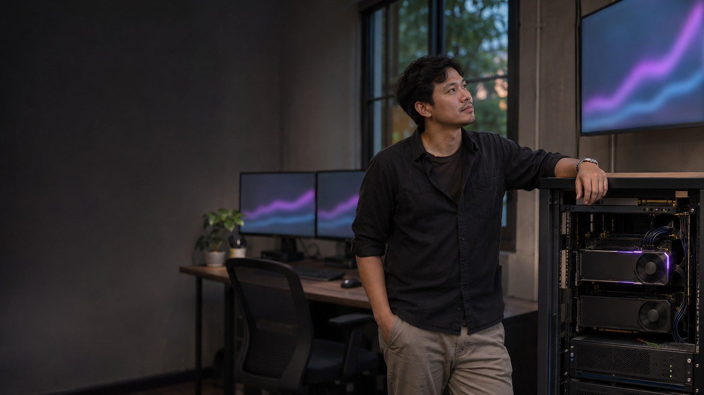

สัปดาห์ที่ 3 · VastAi Application · LAB 9
LAB 9 · ระบบผสมสำหรับบริการสร้างภาพ API gateway + RabbitMQ + GPU Worker · GPU 1 ใบ รองรับผู้ใช้พร้อมกันได้กี่คน
กด → หรือ Space เพื่อไปต่อ · O สารบัญ · F เต็มจอ · คลิกภาพเพื่อขยาย
ภาพจำลอง
ภาพรวมของ LAB
ทั้ง LAB ในภาพเดียว: GPU ใบเดิมรับได้ 30 → 52 คน และ 2 GPU รับได้ 104 คน ที่ p95 ≤ 10 วินาที ทุกแบบใช้เกณฑ์เดียวกัน คือ เวลารอ p95 ≤ 10 วินาที และงานล้ม < 1%
ภาพรวมของ LAB
บทเรียนนี้เรียงเป็น 4 ส่วน จากคำถามของเจ้าของระบบไปจนถึงสกิลที่ทำซ้ำได้ ขั้นที่ 1–11 วัดจริงบนเครื่องเช่า ส่วนขั้นที่ 12–13 เก็บงานทั้งหมดเป็นสกิลเวอร์ชัน 0
ภาพรวมของ LAB
วิธีใช้สไลด์ชุดนี้ ปุ่มลูกศร กด → หรือ Space ไปหน้าถัดไป และ ← ย้อนกลับ
สารบัญและเต็มจอ กด O เปิดสารบัญ F เต็มจอ และคลิกภาพเพื่อขยาย
คัดลอกพรอมต์ หน้าพรอมต์มีปุ่ม คัดลอกพรอมต์ทั้งหมด ข้อความตรงกับ README ทุกตัวอักษร ให้วางใน Claude Code ทีละขั้น
ตรวจผลของคุณ หน้า Checklist ติ๊กได้ทีละข้อหลังรันแต่ละขั้น และมีผลของผู้สอนไว้เทียบ
ภาคพื้นฐาน
บริการสร้างภาพ กับผู้ใช้ที่เข้ามาพร้อมกัน คำถามของเจ้าของระบบ ข้อมูลที่ใช้ทดสอบ และโมเดลที่ใช้
ภาพจำลอง

GPU 1 ใบ รองรับผู้ใช้พร้อมกันได้กี่คน แล้วออกแบบระบบอย่างไรให้รับได้มากขึ้น
เราไม่เดา แต่ วัดจริง 3 แบบด้วยตัวยิงโหลดและเกณฑ์เดียวกัน (เวลารอจนได้ภาพ p95 ≤ 10 วินาที และงานล้ม < 1%)
ภาพจำลอง
ส่งเข้า {"prompt": "a steaming bowl of ramen with egg and green onions, top view, photo", "width": 512, "height": 512, "steps": 4, "seed": 7}
ข้อสังเกต สิ่งที่ส่งเข้าเป็นข้อความไม่กี่ร้อยไบต์ งานหนักทั้งหมดอยู่ที่ GPU · ใช้ seed เดิมจะได้ภาพเดิม
ภาคพื้นฐาน · โมเดล
SDXL-Turbo: ข้อความเข้า ภาพ 512 × 512 ออก ใน 4 steps 1 ประเภท Text-to-Image (Diffusion Model ที่กลั่นจาก SDXL ให้สร้างภาพได้ในไม่กี่ steps)
2 Input ข้อความภาษาอังกฤษ 1 ประโยค · LAB นี้ตรึงค่า 512 × 512, 4 steps, guidance 0
3 ขนาด ใช้ VRAM สูงสุดราว 15.3 GB จาก 24 GB ของ RTX 3090 (วัดในขั้นที่ 1)
4 ความเร็วที่วัดได้ ทีละ 1 ภาพ 0.464 วินาที/ภาพ · ครั้งละ 4 ภาพ 0.266 วินาที/ภาพ
5 LAB นี้ใช้ทำอะไร เป็น "งานของ GPU" ที่ใช้วัดความจุของระบบ · ไม่ได้เทรนหรือแก้โมเดล
1 N คือจำนวนผู้ใช้ที่กำลังใช้งานพร้อมกัน X คืองานที่เสร็จต่อวินาที และ R คือเวลารอจนได้ภาพ
2 ผู้ใช้แต่ละคนดูภาพก่อนส่งงานใหม่ (think time Z เฉลี่ย 5 วินาที)
3 GPU ที่ทำได้ 2.15 ภาพ/วินาที จึงรับผู้ใช้ได้ 30 คน ไม่ใช่ 2 คน
แทนค่า 2.15 × (8.4 + 5) ≈ 29, 3.80 × (8.9 + 5) ≈ 53 และ 7.2 × (8.9 + 5) ≈ 100 คน ใกล้กับความจุที่วัดได้ 30, 52 และ 104 คน
ดูจุดที่เส้นแต่ละสีเริ่มแบน: เพดาน 2.15 / 3.8 / 7.2–7.4 ภาพ/วินาที ของ API Synchronous ระบบผสม 1 Worker และระบบผสม 2 Worker
1 p50 คือเวลาที่งานครึ่งหนึ่งเสร็จเร็วกว่า ส่วน p95 คือเวลาที่งาน 95% เสร็จเร็วกว่า
2 SLO ของ LAB นี้คือ p95 ≤ 10 วินาที และงานล้ม < 1% (เลิกรอที่ 30 วินาทีนับเป็นงานล้ม)
3 ความจุ คือจำนวนผู้ใช้ N สูงสุดที่ยังผ่าน SLO
1 N = 8 p50 0.47 s, p95 1.12 s, p99 1.23 s: คนส่วนใหญ่ไม่ต้องรอ แต่บางคนมาชนกัน p95 จึงสูงกว่า p50 เกิน 2 เท่า
2 N = 30 p50 8.42 s, p95 9.19 s, p99 9.25 s: อิ่มตัวแล้ว ทุกคนรอนานพอ ๆ กัน p50 กับ p95 วิ่งชิดกัน
1 ก่อนอิ่มตัว เวลารอใกล้กับเวลาทำงาน 0.47 วินาที หลังอิ่มตัว เวลารอเพิ่มเป็นเส้นตรงตาม N
2 ความจุอยู่ที่จุดที่เส้น p95 ตัดเส้น SLO ไม่ใช่จุดที่ระบบล่ม
3 จุดอิ่มตัวประมาณได้จาก N* = X × (S + Z) = 2.15 × (0.47 + 5) ≈ 12 คน
Baseline: N = 8 → p95 1.1 s · N = 16 → 3.4 s · N = 24 → 7.3 s · N = 32 → 10.8 s (Throughput ค้างที่ 2.15 ตั้งแต่ N = 16) Knee อยู่ระหว่าง 8 กับ 16 ตรงกับที่คำนวณได้ 12
1 ผู้ใช้ถือสายรอ และคำขอยืนรอกันในหน่วยความจำของ server เป็นคิวที่มองไม่เห็น
2 server ยังสร้างภาพให้ผู้ใช้ที่เลิกรอไปแล้ว คิวไม่มีเพดาน และถ้า server ดับ งานที่รออยู่หายทั้งหมด
3 Burst 200 งานใน 10 วินาทีเท่ากับ 20 งาน/วินาที ขณะที่ความจุคือ 2.15 ภาพ/วินาที
1 API gateway รับงานแล้วตอบ 202 พร้อมเลขงานทันที
2 RabbitMQ เก็บงานเป็นคิวจนกว่า Worker จะว่าง
3 GPU Worker ดึงงานจากคิวไปสร้างภาพ ตัวละ 1 GPU และเพิ่มได้โดยไม่แก้ส่วนอื่น
1 Load Balancer เหมาะกับคำขอสั้นที่ผู้ใช้ถือสายรอได้ ส่วน Queue เหมาะกับงานยาวหรืองานที่มาเป็นก้อน
2 ระหว่างรอ งานอยู่ใน connection ของผู้ใช้ เทียบกับอยู่ในคิวซึ่งเขียนลงดิสก์ได้
3 เมื่อเครื่องทำงานตาย คำขอที่ค้างอยู่ล้ม แต่ในระบบคิว งานกลับเข้าคิวให้ Worker ตัวอื่นทำแทน
1 Producer คือ gateway ที่ส่ง 1 ข้อความต่อ 1 งาน แล้วตอบ 202 ทันที (p50 0.007 วินาที แม้คิวยาว 100 งาน)
2 Exchange ส่งงานเข้าคิว jobs และส่งเหตุการณ์ของ Worker ผ่าน exchange jobs.events
3 Consumer คือ Worker 1 ตัวต่อ GPU 1 ใบ ที่ดึงงานจากคิว jobs ส่วนงานเสียไปอยู่ที่ jobs.dead
1 Consumer หลายตัวฟังคิวเดียวกัน จึงกระจายงานได้เองโดยไม่ต้องมี Load Balancer
2 Prefetch คือจำนวนข้อความที่ยังไม่ ack ที่ Worker ถือได้ LAB นี้ตั้ง prefetch = 4 จึงเป็นขนาด batch สูงสุดด้วย
3 Worker 2 ตัวที่ N = 104 ใช้ GPU 92.6% และ 94.2% ทำ 4.00 ภาพต่อ batch ทั้งคู่ และความจุเพิ่มจาก 52 เป็น 104 คน
1 RabbitMQ ลบข้อความเมื่อได้ ack ถ้า Worker หลุดก่อน ack ข้อความกลับเข้าคิวและถูกส่งให้ตัวอื่น (Redelivery)
2 การรับประกันแบบ at-least-once ทำให้งานอาจถูกทำ 2 ครั้ง จึงตั้งชื่อไฟล์ภาพตามเลขงานให้เขียนทับได้ (Idempotent)
3 ขั้นที่ 9 ปิด Worker gpu1 ขณะถืองาน 4 งาน งานถูกส่งซ้ำ 4 งาน และงานดี 89 งานเสร็จครบ หาย 0
1 Durable queue และ Persistent message เขียนคิวและข้อความลงดิสก์ จึงอยู่รอดเมื่อ RabbitMQ รีสตาร์ต
2 Dead-letter queue แยกงานเสียออกไป ไม่ให้วนกลับมาทำให้ Worker ล้มซ้ำ และเก็บไว้ให้ตรวจภายหลัง
3 ขั้นที่ 9 งานเสีย 1 งานเข้า DLQ โดยงานอื่นไม่ถูกกระทบ ส่วนการรีสตาร์ต RabbitMQ ไม่ได้ทดลองใน LAB นี้
1 Backpressure ตอบ 429 พร้อม Retry-After เมื่องาน normal ที่รอถึง 100 × จำนวน Worker ที่ยังอยู่ (งาน express รับเสมอ)
2 ผลจริง: Burst ตอบ 429 รวม 621 ครั้ง งานค้างไม่เกิน 106 เว็บส่ง 500 งาน รับ 250 ปฏิเสธ 250 และเมื่อ Worker ตาย 1 ตัว เพดานลดจาก 200 เป็น 100 เอง
3 Priority queue (express = 9, normal = 1) ทำให้งาน express มี p95 2.1 วินาที เทียบกับงาน normal 43.4 วินาที
1 1 ภาพใช้ 0.464 วินาที แต่ 4 ภาพใช้ 1.065 วินาที (0.266 วินาที/ภาพ)
2 Worker ได้งานแรกแล้วรอ 30 ms เพื่อรวมงานที่ค้างในคิว ไม่เกิน 4 ภาพ
3 งานน้อย batch เท่ากับ 1 จึงไม่เสียเวลารอ งานมาก batch เพิ่มเป็น 4 เอง
Throughput สูงสุด (ภาพ/วินาที)
3.80
เดิม 2.15 ภาพ/วินาที · ×1.77
GPU utilization ตอนเต็ม
~91%
เดิม ~60%
ความจุ
52 คน
เดิม 30 คน · ×1.73
เวลารอที่ N = 1
0.51 s
เดิม 0.47 s · ช้าลงเล็กน้อยเพราะผ่านคิว
ข้อสังเกต ทำไมไม่ใช้ batch 8: จาก 4 เป็น 8 ได้เพิ่มแค่ 3.76 → 3.91 ภาพ/วินาที แต่ทุกงานใน batch ต้องรอรอบละ 2 วินาที
ซ้าย: ภาพเฉลี่ยต่อ batch · ขวา: GPU utilization ของ API Synchronous เทียบกับระบบผสม
1 Efficiency = (ความจุที่ k ใบ ÷ ความจุ 1 ใบ) ÷ k ค่า 100% หมายถึงเพิ่ม GPU 2 เท่าแล้วรับได้ 2 เท่าพอดี
2 Worker แต่ละตัวทำงานอิสระ ส่วนกลาง (gateway, RabbitMQ) ทำงานเบามาก จึงได้ค่าใกล้ 100%
3 ผลจริง 52 → 104 คน = 2.0 เท่า Efficiency 100% (ภาพ/วินาที 97%) แถว 3 ใบ (~156 คน, ~11.1 ภาพ/วินาที) เป็น การคำนวณ ไม่ใช่ผลวัด
ภาค LAB
วัดจริง 3 แบบ ใน 11 ขั้น แล้วเก็บเป็นสกิล ทุกขั้นคือ 1 พรอมต์ และโค้ดทุกไฟล์ AI เขียนจากพรอมต์ โดยเริ่มจากโฟลเดอร์ว่าง
ภาพจำลอง
ภาค LAB · แผนที่
แผนที่ของ LAB: 11 ขั้นจากเช่าเครื่องถึงลบเครื่อง แล้วต่อด้วยขั้นที่ 12–13 ทำขั้นที่ 1 → 11 ให้ครบในรอบเดียว และทำขั้นที่ 12–13 หลังลบเครื่องแล้ว
ภาค LAB · แผนที่
การทดลองเทียบ 3 แบบ ด้วยตัวยิงโหลดชุดเดียวกันและเกณฑ์ SLO เดียวกัน 1 ผู้ใช้จำลองแต่ละคนส่งข้อความ รอจนได้ภาพ ดูภาพ 2.5–7.5 วินาที (เฉลี่ย 5 วินาที) แล้วส่งใหม่ ถ้ารอเกิน 30 วินาทีนับเป็นงานล้ม
2 ไล่ระดับ N = 1, 8, 16, 24, 32, 48, 64, 96, 128, … ระดับละ 30 วินาที (ไม่นับ 10 วินาทีแรก) หยุดที่ระดับแรกที่ไม่ผ่าน แล้วลองค่ากึ่งกลางอีก 2 ครั้ง
3 เทียบ 3 แบบ: A API Synchronous บน GPU 1 ใบ (Baseline) B ระบบผสม Worker 1 ตัวบน GPU ใบเดิม และ C ระบบผสม Worker 2 ตัวบน GPU 2 ใบ
4 ความจุ คือ N สูงสุดที่ผ่าน SLO คือ p95 ≤ 10 วินาที และงานล้ม < 1%
ภาค LAB · แผนที่
ก่อนเริ่ม: พรอมต์ทำงานใน container และสั่งเครื่องเช่าบน Vast.ai 1 เปิด Claude Code ที่โฟลเดอร์ของบท 02_VastAi_Application ("โฟลเดอร์ปัจจุบัน" ในพรอมต์) และทำ LAB 0 ก่อน 2 พรอมต์ทำงานใน container multi-account โฟลเดอร์ /workspace/vastapp_lab ด้วยสกิล vastai โดย HF_TOKEN อยู่ในไฟล์ .env และห้ามแสดงค่า
3 เครื่อง เครื่องเดียว RTX 3090 2 ใบ · 16 cores · $0.345/ชม. (เพดาน $0.60) · ตัวยิงโหลดรันบนเครื่องเดียวกับ server
4 เวลาและค่าเช่าจริง 11 ขั้นรวมราว 96 นาที · เครื่องเปิด 1 ชม. 37 นาที · $0.572
ขั้นที่ 1
เช่าเครื่อง 2 GPU และลองโมเดล เช่า RTX 3090 2 ใบ ติดตั้งโมเดลกับ RabbitMQ แล้วจับเวลาสร้างภาพ
ผลจริง ทำทีละภาพได้ 2.15 ภาพ/วินาที และทำครั้งละ 4 ภาพได้ 3.76 ภาพ/วินาที
ใช้เวลา 20 นาที (รวมรอเครื่องและดาวน์โหลดโมเดล)
ขั้นที่ 1 จาก 13
1 เช่าเครื่องเดียวที่มี RTX 3090 2 ใบ ติดป้าย vapp-lab9 ราคารวมไม่เกิน $0.60 ต่อชั่วโมง
2 ติดตั้งสิ่งที่ต้องใช้กับโมเดล stabilityai/sdxl-turbo และติดตั้ง RabbitMQ ไว้ล่วงหน้า เพราะเครื่องเช่าไม่มี Docker
3 จับเวลาสร้างภาพ 512x512 แบบ 4 steps บน GPU ใบแรก เมื่อส่งครั้งละ 1, 2, 4 และ 8 ข้อความ
4 เขียนคำบรรยายภาพ 12 ข้อลง prompts.txt แล้วสร้างภาพจาก 6 ข้อแรกเป็น dataset_samples.jpg
พรอมต์ทั้งหมด 14 บรรทัด คัดลอกพรอมต์ทั้งหมด
ทำงานใน container `multi-account` โฟลเดอร์ /workspace/vastapp_lab ด้วยสกิล vastai
เตรียมเครื่องสำหรับบริการสร้างภาพจากข้อความ (Text-to-Image)
1. เช่าเครื่องเดียวที่มี RTX 3090 2 ใบ ตั้งป้ายเครื่องว่า vapp-lab9 ราคารวมไม่เกิน $0.60 ต่อชั่วโมง (ถ้าหาไม่ได้จริง ใช้ RTX 4090 2 ใบ ไม่เกิน $1.00 แล้วบอกเหตุผล)
เลือกเครื่อง verified ที่เชื่อมต่อตรงได้ ความน่าเชื่อถือ 95% ขึ้นไป CPU 12 cores ขึ้นไป เน็ตเร็ว อยู่นอกประเทศจีน (จะได้โหลดโมเดลจาก Hugging Face ได้) disk 50 GB และเปิดพอร์ตให้ API จากภายนอกเข้าได้ 1 พอร์ต
2. ติดตั้งสิ่งที่ต้องใช้สร้างภาพด้วยโมเดล stabilityai/sdxl-turbo และติดตั้ง RabbitMQ ไว้ล่วงหน้า (เครื่องเช่าไม่มี Docker)
ถ้าโหลดโมเดลแล้วเจอข้อผิดพลาดเรื่อง brotli ให้อัปเดตแพ็กเกจ brotli
3. ลองสร้างภาพขนาด 512x512 แบบ 4 steps บน GPU ใบแรก โดยส่งข้อความครั้งละ 1, 2, 4, 8 ข้อความ แล้วจับเวลา
HF_TOKEN อยู่ในไฟล์ .env ของโฟลเดอร์ปัจจุบัน ห้ามแสดงค่า
4. แต่งคำบรรยายภาพภาษาอังกฤษ 12 ข้อ (ภาพถ่ายทั่วไป เช่น ประภาคาร จักรยาน ชามราเม็ง) เก็บไว้ที่ lab9_hybrid/code/prompts.txt สำหรับใช้ยิงโหลดทุกขั้น
แล้วสร้างภาพจาก 6 ข้อแรก เรียงเป็นตารางภาพเดียวพร้อมข้อความใต้ภาพ เก็บที่ lab9_hybrid/results/dataset_samples.jpg
สรุปเป็นตาราง: GPU · ราคาต่อชั่วโมง · ที่ตั้ง · CPU cores และตารางเวลาสร้างภาพ (วินาทีต่อภาพ ภาพต่อวินาที) เมื่อส่งครั้งละ 1, 2, 4, 8 ภาพ
อธิบายด้วยว่างาน 1 ชิ้นของบริการนี้ส่งอะไรเข้าไป ได้อะไรกลับมา (ยกตัวอย่างจริง 1 งาน) แล้วบอกว่าเครื่องยังเปิดอยู่ ส่วนหนึ่งของคำตอบจริง · ดู ภาพคำตอบเต็ม
1 ตารางนี้บอกเพดานของ GPU 1 ใบล่วงหน้า: ทำทีละภาพได้ 2.15 ภาพ/วินาที ทำครั้งละ 4 ภาพได้ 3.76 · สองตัวเลขนี้จะกลับมาเป็น Throughput สูงสุดของ Baseline และของระบบผสม
2 จาก 4 เป็น 8 ภาพแทบไม่เร็วขึ้น เราจึงตั้งขนาด batch ของ Worker ไว้ที่ 4
3 AI รายงานปัญหาที่เจอเอง: rabbitmqctl บนเครื่องเช่าอ่าน cookie ไม่ได้ และ SSH หลุดระหว่างดาวน์โหลดโมเดล · งานยาวต้องรันเป็นงานเบื้องหลัง
4 ตั้งแต่ขั้นนี้เงินเริ่มเดิน ชั่วโมงละ $0.345 จนกว่าจะลบเครื่องในขั้นที่ 11
ภาพต่อวินาทีของ batch 1, 2, 4, 8 คือ 2.15, 3.22, 3.76, 3.91 จาก 4 เป็น 8 ภาพแทบไม่เร็วขึ้น เราจึงตั้งขนาด batch ของ Worker ไว้ที่ 4
ขั้นที่ 2
เขียน API แบบ Synchronous (Baseline) API ที่ผู้ใช้ถือสายรอจนได้ภาพ และสร้างทีละ 1 ภาพบน GPU ใบแรก
ผลจริง มี key ได้ภาพ ไม่มี key ได้ 401 และ 500 คำขอพร้อมกันได้ภาพครบในเวลา 234 วินาที
ใช้เวลา 7 นาที
ขั้นที่ 2 จาก 13
1 API รับข้อความที่ POST /generateAPI key ที่สุ่มและเก็บไว้บนเครื่องเช่า
2 คำขอที่มาพร้อมกันต่อแถวรอกันเองใน server ซึ่งต้องรับคำขอค้างได้อย่างน้อย 500 คำขอ
3 โมเดล stabilityai/sdxl-turbo สร้างภาพ 512x512 แบบ 4 steps บน GPU ใบแรก ครั้งละ 1 ภาพ
4 ทดสอบจากนอกเครื่อง: ส่งพร้อม key ต้องได้ภาพ และส่งโดยไม่มี key ต้องได้ 401
พรอมต์ทั้งหมด 15 บรรทัด คัดลอกพรอมต์ทั้งหมด
ทำงานใน container `multi-account` โฟลเดอร์ /workspace/vastapp_lab ด้วยสกิล vastai
เครื่องที่ใช้คือเครื่องป้าย vapp-lab9
เขียน API สร้างภาพแบบตรงไปตรงมา (ผู้ใช้ถือสายรอจนได้ภาพ) แล้วเปิดบน GPU 1 ใบ
1. เขียนไว้ที่ lab9_hybrid/code/sync_server.py
- รับข้อความที่ POST /generate แล้วตอบกลับเป็นภาพ JPEG
- ใช้โมเดล stabilityai/sdxl-turbo ภาพ 512x512 แบบ 4 steps บน GPU ใบแรก สร้างทีละ 1 ภาพ
- คำขอที่มาพร้อมกันให้ยืนรอกันเอง และรับคำขอค้างพร้อมกันได้อย่างน้อย 500 คำขอ
- ต้องใช้ API key ที่สุ่มขึ้นแล้วเก็บเป็นไฟล์บนเครื่องเช่า
- มี GET /health และ GET /stats ที่บอกจำนวนคำขอที่รับมา กับจำนวนภาพที่สร้างเสร็จแล้ว
2. นำไปเปิดบนเครื่องเช่าเป็นงานเบื้องหลัง ที่พอร์ตที่เปิดไว้
3. ทดสอบจากนอกเครื่อง: ส่งข้อความ 1 ข้อพร้อม key แล้วได้ภาพ · ส่งแบบไม่มี key ต้องได้ 401
4. อธิบายโค้ดที่เขียนสั้นๆ 3–5 บรรทัดว่าแต่ละส่วนทำอะไร
ห้ามแสดงค่า key · สรุป: ผลทดสอบ 2 ข้อ และเวลาที่ใช้ต่อภาพ แล้วบอกว่าเครื่องยังเปิดอยู่ ส่วนหนึ่งของคำตอบจริง · ดู ภาพคำตอบเต็ม
1 นี่คือแบบที่เขียนง่ายที่สุด (78 บรรทัด) และใช้เป็น Baseline ของทั้ง LAB
2 คำขอที่มาพร้อมกัน "ยืนรอกันเอง" ใน server · ยิง 500 คำขอพร้อมกันได้ภาพครบ แต่ใช้ 234 วินาที คนท้ายแถวรอเกือบ 4 นาที
3 API นี้เปิดสู่อินเทอร์เน็ต จึงต้องมี API key · ข้อทดสอบที่ 2 ยืนยันว่าคนไม่มี key ใช้ไม่ได้
ขั้นที่ 3
ตัวยิงโหลด และความจุของ Baseline จำลองผู้ใช้ N คน แล้วไล่ระดับ N จนไม่ผ่าน SLO
ผลจริง GPU 1 ใบ รองรับผู้ใช้พร้อมกันได้ 30 คน ที่ p95 ≤ 10 วินาที
ใช้เวลา 8 นาที
ขั้นที่ 3 จาก 13
1 ผู้ใช้จำลองแต่ละคนวนใช้คำบรรยาย 12 ข้อ รอจนได้ภาพ พักดูภาพ 2.5–7.5 วินาที แล้วส่งใหม่ และนับงานที่รอเกิน 30 วินาทีเป็นงานล้ม
2 ไล่ระดับ N = 1, 8, 16, 24, 32, 48, 64, 96, 128, 160, 192, 256, 320 ระดับละ 30 วินาที โดยไม่นับ 10 วินาทีแรก
3 เมื่อพบระดับแรกที่ไม่ผ่าน SLO ให้หยุด แล้วลองระดับกึ่งกลางอีก 2 ครั้งเพื่อให้ได้ค่าที่ละเอียดขึ้น
4 ทุกระดับบันทึกภาพต่อวินาที p50 p95 p99 งานล้ม (%) GPU utilization และ CPU ของตัวยิงโหลดเป็นไฟล์ JSON
พรอมต์ทั้งหมด 14 บรรทัด คัดลอกพรอมต์ทั้งหมด
ทำงานใน container `multi-account` โฟลเดอร์ /workspace/vastapp_lab ด้วยสกิล vastai
เครื่องที่ใช้คือเครื่องป้าย vapp-lab9
เขียนตัวยิงโหลด แล้ววัดว่า API แบบ Synchronous บน GPU 1 ใบ รับผู้ใช้พร้อมกันได้กี่คน
1. เขียนไว้ที่ lab9_hybrid/code/loadtest.py ให้รันบนเครื่องเช่าเครื่องเดียวกับ API
- ผู้ใช้จำลอง 1 คน: ส่งข้อความ (วนใช้ 12 ข้อใน lab9_hybrid/code/prompts.txt) → รอจนได้ภาพ → พักดูภาพ 2.5–7.5 วินาที (เฉลี่ย 5) → ส่งใหม่ · เลิกรอเมื่อเกิน 30 วินาที นับเป็นงานล้ม
- ไล่ระดับผู้ใช้พร้อมกัน N = 1, 8, 16, 24, 32, 48, 64, 96, 128, 160, 192, 256, 320 ระดับละ 30 วินาที ไม่นับ 10 วินาทีแรก
- รอให้งานค้างหมดก่อนขึ้นระดับถัดไป · เจอระดับแรกที่ไม่ผ่าน SLO ให้หยุด แล้วลองระดับกึ่งกลางอีก 2 ครั้งให้ได้ค่าที่ละเอียดขึ้น
- ทุกระดับเก็บ: ภาพต่อวินาที เวลารอ p50 p95 p99 งานล้ม (%) GPU utilization ของแต่ละใบ และ CPU ของตัวยิงเอง แล้วบันทึกเป็นไฟล์ JSON
2. วัด API ที่เปิดไว้ · SLO คือเวลารอจนได้ภาพ p95 ไม่เกิน 10 วินาที และงานล้มน้อยกว่า 1%
ใช้เวลาราว 6 นาที ให้รันเป็นงานเบื้องหลังแล้วรอ
3. อธิบายโค้ดที่เขียนสั้นๆ 3–5 บรรทัด
สรุปเป็นภาษาไทย: ตารางทุกระดับ N (ภาพต่อวินาที · p50 · p95 · งานล้ม · GPU utilization · ผ่าน SLO ไหม) และประโยค "GPU 1 ใบ รองรับผู้ใช้พร้อมกันได้ N คน ที่ p95 ≤ 10 วินาที" แล้วบอกว่าเครื่องยังเปิดอยู่ ส่วนหนึ่งของคำตอบจริง · ดู ภาพคำตอบเต็ม
1 GPU 1 ใบ รองรับผู้ใช้พร้อมกันได้ 30 คน ที่ p95 ≤ 10 วินาที · นี่คือคำตอบแรกของคำถามเจ้าของระบบ
2 งานล้ม 0% ทุกระดับ ระดับ 32 คนตกเพราะ รอนานเกิน ไม่ใช่เพราะระบบล่ม
3 GPU utilization ค้างที่ราว 60% ทั้งที่คิวเต็ม: คอขวดไม่ใช่ GPU แต่คือการทำทีละภาพ (ช่วงรับ HTTP และแปลง JPEG GPU ว่าง) · นี่คือช่องว่างที่ขั้นที่ 5–6 จะเก็บ
4 ตัวยิงโหลดใช้ CPU ไม่เกิน 0.5% ของ 1 core จึงไม่ได้ถ่วงผลวัด
N ภาพ/วินาที p50 (s) p95 (s) p99 (s) งานล้ม % GPU util % SLO 1 0.15 0.47 0.47 0.47 0 5.5 ผ่าน 8 1.60 0.47 1.12 1.23 0 47.2 ผ่าน 16 2.15 2.70 3.36 3.44 0 59.9 ผ่าน 24 2.15 6.47 7.25 7.35 0 59.9 ผ่าน 28 2.15 7.52 8.77 9.07 0 60.9 ผ่าน 30 2.15 8.42 9.19 9.25 0 58.3 ผ่าน 32 2.10 9.31 10.81 11.45 0 60.2 ไม่ผ่าน
ข้อสังเกต Throughput คงที่ที่ 2.15 ภาพ/วินาทีตั้งแต่ N = 16 GPU utilization ค้างราว 60% และงานล้ม 0% ทุกระดับ
ขั้นที่ 4
API gateway ที่ส่งงานเข้าคิว RabbitMQ ด่านหน้าที่รับงาน ส่งเข้าคิว แล้วตอบเลขงานทันที
ผลจริง ยังไม่มี Worker แต่ gateway รับงานได้แล้ว โดยตอบ 202 และตอบ 401 เมื่อไม่มี key
ใช้เวลา 8 นาที
ขั้นที่ 4 จาก 13
1 POST /jobs
2 คิวเป็น durable ข้อความเป็น persistent และเป็น Priority queue งานที่ Worker ปฏิเสธไปอยู่ Dead-letter queue
3 Backpressure ตอบ 429 เมื่องาน normal ที่รอถึง 100 งานต่อ Worker 1 ตัว ส่วนงาน express รับเสมอ
4 ผู้ใช้ถามสถานะที่ GET /jobs/{เลขงาน}GET /jobs/{เลขงาน}/image
พรอมต์ทั้งหมด 15 บรรทัด คัดลอกพรอมต์ทั้งหมด
ทำงานใน container `multi-account` โฟลเดอร์ /workspace/vastapp_lab ด้วยสกิล vastai
เครื่องที่ใช้คือเครื่องป้าย vapp-lab9
เขียนด่านหน้าของระบบผสม: รับงานแล้วส่งเข้าคิว ตอบผู้ใช้ทันทีโดยไม่ต้องถือสายรอ
1. เขียนไว้ที่ lab9_hybrid/code/gateway.py ใช้ API key ตัวเดิมทุกทาง
- POST /jobs รับข้อความกับระดับความสำคัญ (normal หรือ express) ส่งงานเข้าคิวของ RabbitMQ แล้วตอบเลขงานทันทีพร้อมเวลารอโดยประมาณ
- คิวงานเป็น durable ข้อความเป็น persistent และเป็น Priority queue ที่งาน express ได้ทำก่อนงาน normal · งานที่ Worker ปฏิเสธให้ไปอยู่ Dead-letter queue
- Backpressure: ถ้างาน normal ที่รอในคิวมีถึง 100 งานต่อ Worker 1 ตัว ให้ตอบ 429 พร้อมบอกว่าควรกลับมาใหม่ในอีกกี่วินาที ส่วนงาน express รับเสมอ
- GET /jobs/{เลขงาน} บอกสถานะ รอจนงานเสร็จได้สูงสุด 10 วินาทีต่อครั้ง · GET /jobs/{เลขงาน}/image ส่งภาพ
- GET /stats บอกจำนวนงานที่รอ กำลังทำ เสร็จ ถูกปฏิเสธ ถูกส่งซ้ำ งานเสีย เพดานคิวตอนนี้ สถานะของ Worker แต่ละตัว และงานที่เสร็จล่าสุด 12 งาน
2. ย้าย API แบบ Synchronous ไปพอร์ตภายในอื่น (เปิดไว้ใช้เทียบภายหลัง) แล้วเปิด RabbitMQ และเปิด gateway ที่พอร์ตที่ภายนอกเข้าได้
3. ทดสอบจากนอกเครื่อง: ส่งงาน 1 งานพร้อม key ต้องได้เลขงานและสถานะรอ (ยังไม่มี Worker) · ส่งแบบไม่มี key ต้องได้ 401
4. อธิบายโค้ดที่เขียนสั้นๆ 3–5 บรรทัด
ห้ามแสดงค่า key · สรุปเป็นภาษาไทย: ผลทดสอบ 2 ข้อ และจำนวนงานที่รออยู่ในคิว แล้วบอกว่าเครื่องยังเปิดอยู่ ส่วนหนึ่งของคำตอบจริง · ดู ภาพคำตอบเต็ม
1 ยังไม่มี Worker เลย แต่ gateway รับงานได้แล้ว และตอบ 202 · งานนอนรออยู่ในคิวอย่างปลอดภัย นี่คือความหมายของการแยกคนรับงานออกจากคนทำงาน
2 คำที่เราตรึงไว้ในพรอมต์ (durable, persistent, Priority queue, Dead-letter queue, เพดาน 100 ต่อ Worker) คือทฤษฎีข้อ 6 ทั้งหมด
3 AI ตัดสินใจเองว่าตอนยังไม่มี Worker ให้คิดเพดานเหมือนมี 1 ตัว ไม่เช่นนั้น 100 × 0 = 0 จะปฏิเสธทุกงาน · อ่าน "เรื่องที่ควรรู้" ในคำตอบทุกครั้ง
ขั้นที่ 5
GPU Worker ที่หยิบงานจากคิว Consumer ที่ใช้ GPU 1 ใบ รวมงานครั้งละไม่เกิน 4 ภาพ และ ack หลังเก็บภาพแล้ว
ผลจริง งานที่ค้างเสร็จทันทีที่ Worker เปิด และ 8 งานพร้อมกันถูกทำเป็น 4 + 4
ใช้เวลา 5 นาที
ขั้นที่ 5 จาก 13
1 Worker 1 ตัวใช้ GPU 1 ใบ ตามหมายเลขที่ระบุตอนเปิด และทำงานคู่กับ gateway.py
2 หยิบงานที่รออยู่ได้ครั้งละไม่เกิน 4 ภาพ (prefetch 4 ) และสร้างภาพด้วยโมเดลและค่าเดียวกับ Baseline
3 ส่ง ack หลังเก็บภาพแล้วเท่านั้น งานจึงไม่หายถ้า Worker ตายกลางคัน
4 งานที่ข้อความว่างถือเป็นงานเสีย และถูกปฏิเสธไปที่ Dead-letter queue
พรอมต์ทั้งหมด 13 บรรทัด คัดลอกพรอมต์ทั้งหมด
ทำงานใน container `multi-account` โฟลเดอร์ /workspace/vastapp_lab ด้วยสกิล vastai
เครื่องที่ใช้คือเครื่องป้าย vapp-lab9
เขียน Worker ที่หยิบงานจากคิวไปสร้างภาพ แล้วเปิด 1 ตัวบน GPU ใบแรก
1. เขียนไว้ที่ lab9_hybrid/code/worker.py ตัวหนึ่งใช้ GPU 1 ใบตามหมายเลขที่ระบุตอนเปิด ทำงานคู่กับ lab9_hybrid/code/gateway.py
- หยิบงานจากคิว รวมงานที่รออยู่ได้ครั้งละไม่เกิน 4 ภาพ (prefetch 4) สร้างภาพด้วยโมเดลและค่าเดียวกับ Baseline แล้วเก็บภาพไว้ให้ gateway
- ยืนยันว่างานเสร็จ (ack) หลังเก็บภาพแล้วเท่านั้น งานจึงไม่หายถ้า Worker ตายกลางคัน
- บอก gateway ทุกวินาทีว่ายังอยู่และกำลังทำกี่ภาพ · งานที่ข้อความว่างถือเป็นงานเสีย ให้ปฏิเสธเพื่อส่งไป Dead-letter queue
2. เปิด Worker 1 ตัวบน GPU ใบแรกเป็นงานเบื้องหลัง
3. ทดสอบจากนอกเครื่อง: งานที่ค้างจากขั้นก่อนต้องเสร็จและโหลดภาพได้ · ส่งงานใหม่ 8 งานพร้อมกัน ดูว่า Worker รวมทำครั้งละกี่ภาพ
4. อธิบายโค้ดที่เขียนสั้นๆ 3–5 บรรทัด
ห้ามแสดงค่า key · สรุปเป็นภาษาไทย: ผลทดสอบ 2 ข้อ และเวลาตั้งแต่ส่งงานจนได้ภาพ แล้วบอกว่าเครื่องยังเปิดอยู่ ส่วนหนึ่งของคำตอบจริง · ดู ภาพคำตอบเต็ม
1 งานที่ค้างมาตั้งแต่ขั้นที่ 4 เสร็จทันทีที่ Worker เปิด · คิวเก็บงานไว้ให้จริง
2 8 งานพร้อมกันถูกทำเป็น 4 + 4 ตรงกับ prefetch 4 · ชุดละราว 1.0 วินาที = 0.25 วินาที/ภาพ เร็วกว่าทำทีละภาพ (0.47) ราว 1.9 เท่า
3 ลำดับ "เก็บภาพ → แจ้งว่าเสร็จ → ack" คือสิ่งที่ทำให้งานไม่หายในขั้นที่ 9
ขั้นที่ 6
วัดระบบผสมบน GPU 1 ใบ ยิงระบบผสมด้วยระดับ N และ SLO เดิม แล้วเทียบกับ Baseline
ผลจริง GPU ใบเดิม รับได้ 52 คน จากเดิม 30 คน (1.73 เท่า)
ใช้เวลา 9 นาที
ขั้นที่ 6 จาก 13
1 เพิ่มให้ loadtest.py ยิงระบบผสมได้ ผู้ใช้ส่งงาน รอจนเสร็จ แล้วโหลดภาพ จึงนับว่าได้ภาพ
2 ถ้าถูกตอบ 429 นับเป็นงานล้ม และเก็บจำนวนภาพเฉลี่ยที่ Worker รวมทำต่อครั้งของทุกระดับ
3 เทียบกับ Baseline ใน 3 ด้าน คือ ความจุ ภาพต่อวินาทีสูงสุด และ GPU utilization
พรอมต์ทั้งหมด 12 บรรทัด คัดลอกพรอมต์ทั้งหมด
ทำงานใน container `multi-account` โฟลเดอร์ /workspace/vastapp_lab ด้วยสกิล vastai
เครื่องที่ใช้คือเครื่องป้าย vapp-lab9
วัดระบบผสมบน GPU ใบเดิม 1 ใบ ด้วยวิธี ระดับ N และ SLO เดียวกับ Baseline
1. เพิ่มความสามารถให้ lab9_hybrid/code/loadtest.py ยิงระบบผสมได้
- ผู้ใช้ส่งงานที่ gateway รอจนงานเสร็จ แล้วโหลดภาพ จึงนับว่าได้ภาพ · ถ้าถูกตอบ 429 นับเป็นงานล้ม
- เก็บจำนวนภาพเฉลี่ยที่ Worker รวมทำต่อครั้งในแต่ละระดับด้วย
2. วัดแบบไล่ระดับกับระบบผสมที่มี Worker 1 ตัว · SLO เดิม: p95 ไม่เกิน 10 วินาที และงานล้มน้อยกว่า 1%
ใช้เวลาราว 7 นาที ให้รันเป็นงานเบื้องหลังแล้วรอ
สรุปเป็นภาษาไทย: ตารางทุกระดับ N และประโยค "ระบบผสมบน GPU 1 ใบ รองรับผู้ใช้พร้อมกันได้ N คน ที่ p95 ≤ 10 วินาที"
เทียบกับ Baseline (ความจุ ภาพต่อวินาทีสูงสุด GPU utilization) พร้อมอธิบายว่าต่างกันเพราะอะไร แล้วบอกว่าเครื่องยังเปิดอยู่ ส่วนหนึ่งของคำตอบจริง · ดู ภาพคำตอบเต็ม
1 GPU ใบเดิม รับได้ 52 คน จากเดิม 30 คน (1.73 เท่า) โดยไม่เพิ่ม GPU · ที่มาคือ Batching ไม่ใช่คิว: Throughput 2.15 → 3.80 และ GPU utilization 60% → 91%
2 คอลัมน์ "ภาพต่อ batch" โตเองตามโหลด: 1.00 → 1.96 → 3.43 → 4.00 · ไม่ต้องตั้งค่าอะไรเพิ่ม
3 ข้อแลก: ที่ N = 1 ช้าลงเล็กน้อย (0.47 → 0.51 วินาที) เพราะผ่านคิวและโหลดภาพอีกรอบ
4 ไม่มี 429 เลย เพราะผู้ใช้สูงสุด 64 คน ยังไม่ถึงเพดานคิว 100 งาน
ความจุ
52 คน
จาก 30 คน · 1.73 เท่า
p95 ที่ N = 52
9.57 s
ระดับ 56 คน p95 10.54 s ไม่ผ่าน
ภาพ/วินาทีสูงสุด
3.80
จาก 2.15
GPU utilization
90.1%
ภาพต่อ batch 4.00
เวลารอที่ N = 1
0.51 s
จาก 0.47 s (ผ่านคิว)
ข้อสังเกต คอลัมน์ "ภาพต่อ batch" โตเองตามโหลด: 1.00 → 1.96 → 3.43 → 4.00 · ไม่ต้องตั้งค่าอะไรเพิ่ม
ขั้นที่ 7
งานเข้าเป็นก้อน (Burst) ส่ง 200 งานใน 10 วินาทีเข้าทั้ง 2 แบบ บน GPU 1 ใบเท่ากัน
ผลจริง Synchronous ได้ภาพ 71/200 ส่วนระบบผสมได้ภาพ 200/200
ใช้เวลา 7 นาที
ขั้นที่ 7 จาก 13
1 งาน 200 งานทยอยเข้ามาภายใน 10 วินาที แล้วรอจนระบบทำงานค้างหมด
2 ฝั่ง API Synchronous ผู้ใช้เลิกรอเมื่อเกิน 30 วินาที และนับภาพที่สร้างให้คนที่เลิกรอไปแล้ว
3 ฝั่ง ระบบผสม 10% ของงานเป็น express ผู้ที่ถูกตอบ 429 รอตามเวลาที่ gateway บอกแล้วส่งใหม่ และยอมรอรวมได้ 300 วินาที
พรอมต์ทั้งหมด 12 บรรทัด คัดลอกพรอมต์ทั้งหมด
ทำงานใน container `multi-account` โฟลเดอร์ /workspace/vastapp_lab ด้วยสกิล vastai
เครื่องที่ใช้คือเครื่องป้าย vapp-lab9
ทดลองงานเข้าเกินความจุในช่วงสั้นๆ บน GPU 1 ใบ เทียบ API แบบ Synchronous กับระบบผสม (Worker 1 ตัว)
1. เพิ่มแบบ burst ให้ lab9_hybrid/code/loadtest.py: งาน 200 งานทยอยเข้ามาภายใน 10 วินาที แล้วรอจนระบบทำงานค้างหมด
- กับ API แบบ Synchronous: ผู้ใช้เลิกรอเมื่อเกิน 30 วินาที และนับว่า API สร้างภาพให้คนที่เลิกรอไปแล้วกี่ภาพ
- กับระบบผสม: 10% ของงานเป็น express · ถ้าถูกตอบ 429 ให้รอตามเวลาที่ gateway บอกแล้วส่งใหม่ · ผู้ใช้ยอมรอรวมได้ 300 วินาที
- เก็บ: จำนวนงานสำเร็จ เวลารอ p50 p95 สูงสุด (แยก express กับ normal) จำนวนครั้งที่ตอบ 429 จำนวนงานค้างทุกครึ่งวินาที แล้วบันทึกเป็นไฟล์ JSON
2. ยิง burst ใส่ API แบบ Synchronous ก่อน เสร็จแล้วปิด API ตัวนั้น
3. ยิง burst ใส่ระบบผสม
สรุปเป็นภาษาไทย เป็นตารางเทียบ 2 แบบ: งานสำเร็จ (%) · เวลารอ p50 p95 · เวลาที่ได้คำตอบแรก · ภาพที่สร้างเสียเปล่า · จำนวนครั้งที่ตอบ 429 · เวลารอของงาน express เทียบ normal แล้วบอกว่าเครื่องยังเปิดอยู่ ส่วนหนึ่งของคำตอบจริง · ดู ภาพคำตอบเต็ม
1 Synchronous: GPU ทำงานครบ 200 ภาพ แต่ถึงมือผู้ใช้แค่ 71 ภาพ · GPU ทำงานให้คนที่ไปแล้วต่ออีกราว 60 วินาที
2 จุดที่ยังไม่ดี: gateway ที่ AI เขียนตอบ Retry-After = 1 วินาทีทุกครั้ง ผู้ใช้ 66 คนจึงยิงซ้ำรวม 621 ครั้ง (สูงสุด 19 ครั้งต่องาน) · ควรคำนวณจากความยาวคิว ÷ ความเร็วจริง ลองแก้พรอมต์ขั้นที่ 4 เป็นการบ้าน
API Synchronous
ภาพที่สร้างเสียเปล่า 129 ภาพ · คำตอบแรก 15.2 s (ต้องรอจนได้ภาพ)
71/200
71/200 (35.5%) อีก 129 คนเลิกรอที่ 30 วินาที
ระบบผสม (Worker 1 ตัว)
ภาพที่สร้างเสียเปล่า 0 · คำตอบแรก 0.007 s (202 หรือ 429 ทันที)
200/200
ตอบ 429 รวม 621 ครั้ง จาก 66 งาน · งานค้างสูงสุด 106
ข้อสังเกต ระบบผสม: ทุกคนได้ภาพ และ รู้ผลทันที ว่างานถูกรับหรือให้กลับมาใหม่ · เวลารอ p95 (43 วินาที) สูงกว่าฝั่ง Synchronous (28.6) เพราะนับ ทุกคน ที่ได้ภาพ ส่วนฝั่ง Synchronous นับเฉพาะ 35.5% ที่รอด ต้องอ่านคู่กับอัตราสำเร็จเสมอ
กราฟนี้วาดใหม่จาก results/burst_hybrid.json เพราะกราฟ 4_burst_sync_vs_hybrid.png ที่ AI เขียนนับงานค้างของระบบผสม ซ้ำ 2 ที่
งาน express 20 งาน งาน normal 180 งาน และงาน express ทุกงานรอไม่เกิน 3 วินาที
ขั้นที่ 8
เพิ่ม Worker เป็น 2 ตัว (GPU 2 ใบ) ไม่มีโค้ดใหม่ เปิด Worker ตัวที่สองแล้ววัดซ้ำ
ผลจริง 1 ใบ 52 คน → 2 ใบ 104 คน (2.0 เท่า, Efficiency 100%)
ใช้เวลา 15 นาที
ขั้นที่ 8 จาก 13
1 เปิด Worker เพิ่มบน GPU ใบที่สอง (รวม 2 ตัว) โดยไม่แตะส่วนอื่นของระบบ
2 Worker 2 ตัวฟังคิวเดียวกัน งาน 1 ชิ้นไปถึง ตัวเดียว (Competing Consumers)
3 วัดด้วยตัวยิงโหลด ระดับ N และ SLO เดิม แล้วประมาณการ 3 ใบโดยระบุว่าเป็น การคำนวณ ไม่ใช่ผลวัด
พรอมต์ทั้งหมด 10 บรรทัด คัดลอกพรอมต์ทั้งหมด
ทำงานใน container `multi-account` โฟลเดอร์ /workspace/vastapp_lab ด้วยสกิล vastai
เครื่องที่ใช้คือเครื่องป้าย vapp-lab9
เพิ่ม GPU ให้ระบบผสมอีก 1 ใบ แล้ววัดความจุซ้ำด้วยตัวยิงโหลด ระดับ N และ SLO เดิม
1. เปิด Worker เพิ่มบน GPU ใบที่สอง (รวม 2 ตัว) โดยไม่แตะส่วนอื่นของระบบ
2. วัดแบบไล่ระดับ ใช้เวลาราว 8 นาที ให้รันเป็นงานเบื้องหลังแล้วรอ
สรุปเป็นภาษาไทย เป็นตาราง: จำนวน GPU | สถาปัตยกรรม | รองรับผู้ใช้พร้อมกัน (N) | ภาพต่อวินาทีสูงสุด | p95 ที่ N นั้น | เท่าของ Baseline 1 ใบ | Efficiency เทียบระบบผสม 1 ใบ
ให้มีแถว Baseline และระบบผสม 1 ใบจากขั้นก่อนด้วย · ประโยค "1 ใบ N₁ คน → 2 ใบ N₂ คน (x เท่า, Efficiency y%)"
และประมาณว่าถ้าเพิ่มเป็น 3 ใบน่าจะรองรับได้กี่คน โดยบอกชัดว่าเป็นการคำนวณ ไม่ใช่ผลวัด แล้วบอกว่าเครื่องยังเปิดอยู่ ส่วนหนึ่งของคำตอบจริง · ดู ภาพคำตอบเต็ม
1 1 ใบ 52 คน → 2 ใบ 104 คน (2.0 เท่า, Efficiency 100%) · เทียบกับ Baseline คือ 3.47 เท่า
2 ตัวเลข 3 ใบ (~156 คน) AI บอกชัดว่า คำนวณ ไม่ใช่วัด · เครื่องนี้มี GPU แค่ 2 ใบ ถ้าจะรู้จริงต้องเช่าเครื่อง 3 ใบมาวัด
ความจุ 2 ใบ
104 คน
จาก 52 คน · 2.0 เท่า · Baseline 3.47 เท่า
Efficiency
100%
ภาพ/วินาที 97%
p95 ที่ N = 104
9.63 s
ระดับ 112 คน p95 10.62 s ไม่ผ่าน
ภาพต่อ batch
4.00
GPU utilization ใบ 0 / ใบ 1: 92.6 / 94.2%
3 ใบ (คน)
~156
ประมาณการ ไม่ใช่ผลวัด
ข้อสังเกต ภาพ/วินาทีสูงสุด 7.4 วัดได้ที่ N = 128 ซึ่งเลย SLO ไปแล้ว · ในระดับที่ผ่าน SLO ได้ 7.2 (ราว 95–97% ของ 2 × 3.8)
ความจุ 52 → 104 คน Throughput สูงสุด 3.8 → 7.4 ภาพ/วินาที และจุดสี่เหลี่ยมคือ Baseline 30 คน
ขั้นที่ 9
ฆ่า Worker กลางงาน แล้วสรุปผลเป็นกราฟ ส่ง 90 งานแล้วบังคับปิด Worker gpu1 จากนั้นรวมผลทุกขั้นเป็น metrics.json กับกราฟ 6 ภาพ
ผลจริง งานดี 89 งานเสร็จ 89 งาน หาย 0 ถูกส่งซ้ำ 4 งาน และงานเสีย 1 งานเข้า DLQ
ใช้เวลา 9 นาที
ขั้นที่ 9 จาก 13
1 ขณะ Worker เปิด 2 ตัว ส่ง 90 งานใน 3 วินาที โดยมีงานเสีย (ข้อความว่าง) 1 งาน
2 บังคับปิด Worker ของ GPU ใบที่สอง ที่วินาทีที่ 4 แล้วจดจำนวนงานทุกครึ่งวินาที จากนั้นเปิดกลับมาให้ครบ 2 ตัว
3 report.pymetrics.json กับกราฟ 6 ภาพลง lab9_hybrid/results
พรอมต์ทั้งหมด 15 บรรทัด คัดลอกพรอมต์ทั้งหมด
ทำงานใน container `multi-account` โฟลเดอร์ /workspace/vastapp_lab ด้วยสกิล vastai
เครื่องที่ใช้คือเครื่องป้าย vapp-lab9
พิสูจน์ว่างานไม่หายเมื่อ Worker ตาย แล้วรวมผลทุกขั้นเป็นกราฟ
1. ขณะ Worker เปิดอยู่ 2 ตัว ส่งงาน 90 งานเข้า gateway ภายใน 3 วินาที โดยมีงานเสีย (ข้อความว่าง) 1 งาน
แล้วบังคับปิด Worker ของ GPU ใบที่สองที่วินาทีที่ 4 แบบไม่ให้มันเก็บงาน · จดจำนวนงานที่รอ กำลังทำ และเสร็จ ทุกครึ่งวินาที บันทึกเป็นไฟล์ JSON
จากนั้นเปิด Worker ตัวนั้นกลับมาให้ครบ 2 ตัว
2. เขียนตัวสรุปผลไว้ที่ lab9_hybrid/code/report.py: อ่านไฟล์ผลทุกขั้น แล้วเขียน metrics.json กับกราฟป้ายภาษาอังกฤษ 6 ภาพ
- เวลารอ p50 และ p95 เทียบ N ของทั้ง 3 แบบ พร้อมเส้น SLO และจุดความจุ · ภาพต่อวินาทีเทียบ N
- ความจุและภาพต่อวินาทีสูงสุดเทียบจำนวน GPU (1 และ 2 ใบ) พร้อมเส้น ideal Efficiency และจุดประมาณการของ 3 ใบที่เขียนกำกับว่า estimated
- burst ของ Synchronous เทียบระบบผสม (งานค้างตามเวลา งานสำเร็จ ภาพที่สร้างเสียเปล่า) · เวลารอของงาน express เทียบ normal · จำนวนงานตามเวลาตอนฆ่า Worker
3. รันตัวสรุปผล แล้วคัดลอกไฟล์ผลทั้งหมดกลับมาไว้ที่ lab9_hybrid/results ของโฟลเดอร์ปัจจุบัน
4. เขียนไฟล์ lab9_hybrid/code/web/.env ของโฟลเดอร์ปัจจุบัน 2 บรรทัด: T2I_BASE_URL (ที่อยู่ของ gateway เมื่อเรียกจากนอกเครื่อง) และ T2I_API_KEY
ห้ามแสดงค่า key · สรุปเป็นภาษาไทย: ส่งงานดีกี่งาน เสร็จกี่งาน (งานหายไหม) · ถูกส่งซ้ำกี่งาน · งานเสียเข้า Dead-letter queue กี่งาน · ตาราง 1 / 2 GPU · รายชื่อกราฟ แล้วบอกว่าเครื่องยังเปิดอยู่ ส่วนหนึ่งของคำตอบจริง (AI ตอบเป็นภาษาอังกฤษทั้งที่พรอมต์ขอภาษาไทย ถ้าเจอให้พิมพ์ต่อว่า "สรุปเป็นภาษาไทย") · ดู ภาพคำตอบเต็ม
1 Worker ตายแบบไม่ทันเก็บงาน แต่ งานหาย 0 · 4 งานที่มันถืออยู่ยังไม่ถูก ack RabbitMQ จึงส่งให้ gpu0 ทำแทน
2 งานที่ต้องส่งซ้ำมี ไม่เกิน 4 เพราะ prefetch 4 · ยิ่งตั้ง prefetch สูง งานที่ต้องทำซ้ำเมื่อ Worker ตายยิ่งมาก
3 งานเสีย 1 งานไปพักที่ Dead-letter queue ไม่วนกลับมา และไม่กระทบงานอื่น
4 ช่วงที่เหลือ Worker ตัวเดียว ระบบ ช้าลงแต่ไม่หยุด · เส้น "เสร็จ" ในกราฟชันน้อยลงหลังวินาทีที่ 4
งานดีที่เสร็จ
89/89
หาย 0 · โหลดภาพได้ครบ 89 ภาพ
ถูกส่งซ้ำ (Redelivery)
4
gpu1 ถืออยู่ 4 ภาพตอนถูกปิด gpu0 ทำแทน
Dead-letter queue
1
งานเสียไม่วนกลับมา
ใครทำกี่งาน
76 / 13
gpu0 76 งาน · gpu1 13 งานก่อนถูกปิด
เวลา งานทั้งหมดเสร็จที่วินาทีที่ 20.2 · เปิด gpu1 กลับที่ 21.4 พร้อมที่ 31.3
ดูเส้น "done" หลังปิด gpu1 ที่วินาทีที่ 4: ชันน้อยลง แต่ขึ้นต่อจนครบ 89 ที่วินาทีที่ 20
ขั้นที่ 10
เว็บห้องสร้างภาพ PixelQueue เว็บ Next.js บนเครื่องเราที่พอร์ต 3408 ต่อกับ gateway บนเครื่องเช่า
ผลจริง เว็บเห็น Worker 2 ตัว และเมื่อส่ง 500 งาน ระบบรับ 250 งาน ปฏิเสธ 250 งาน
ใช้เวลา 7 นาที
ขั้นที่ 10 จาก 13
1 เว็บ Next.js เปิดเป็น container ที่ พอร์ต 3408 และเรียก gateway จาก ฝั่ง server ของเว็บ จึงไม่ส่ง key ถึงเบราว์เซอร์
2 มีช่องพิมพ์คำบรรยายภาพ ตัวเลือกงานด่วน และ ปุ่มส่งงานเป็นชุด 20, 60, 500 งาน และงานด่วน 5 งาน
3 มี ตัวเลขสด กราฟความยาวคิวพร้อมเส้นเพดาน การ์ดของ GPU Worker และภาพที่เสร็จล่าสุด 12 ภาพ
ส่วนบนของหน้าเว็บจริงขณะส่ง 500 งาน · ดู ภาพหน้าจอเต็ม
ข้อสังเกต รอบที่ถ่ายภาพหน้าจอนี้ระบบรับ 244 งาน และปฏิเสธ 256 งาน ส่วนคำตอบของ AI รายงานว่ารับ 250 และปฏิเสธ 250 ทั้งสองรอบถูกรับราวครึ่งหนึ่ง เพราะเพดานคือ 200 งาน (100 × Worker 2 ตัว)
พรอมต์ทั้งหมด 12 บรรทัด คัดลอกพรอมต์ทั้งหมด
สร้างเว็บห้องสร้างภาพบนเครื่องนี้ (Docker Desktop) ให้ต่อกับ gateway ของ LAB 9 บน Vast.ai
1. เขียนเว็บ Next.js ไว้ที่ lab9_hybrid/code/web เปิดเป็น container ที่พอร์ต 3408 ใช้ชื่อโปรเจกต์ vapp-lab9
เว็บเรียก gateway (lab9_hybrid/code/gateway.py) จากฝั่ง server ของเว็บ ด้วยค่าในไฟล์ .env ที่ขั้นก่อนเขียนไว้ ห้ามส่ง key ไปที่เบราว์เซอร์
2. หน้าเดียว ภาษาไทย หน้าตาเป็นแอปจริง ชื่อ PixelQueue มีส่วนต่างๆ ดังนี้
- ช่องพิมพ์คำบรรยายภาพ ตัวเลือกงานด่วน และปุ่มสร้างภาพ ที่บอกลำดับคิวกับเวลารอ แล้วแสดงภาพเมื่อเสร็จ (ถ้าคิวเต็มให้บอกว่าควรลองใหม่เมื่อไร)
- ปุ่มส่งงานเป็นชุด 20 งาน 60 งาน 500 งาน และงานด่วน 5 งาน พร้อมบอกว่ารับกี่งาน ปฏิเสธกี่งาน
- ตัวเลขสด: รอในคิว กำลังสร้าง เสร็จแล้ว ถูกปฏิเสธ · กราฟความยาวคิวแบบสดพร้อมเส้นเพดานคิว
- การ์ดของ GPU Worker แต่ละตัว (ว่าง กำลังสร้างกี่ภาพ หรือหยุดทำงาน) · ภาพที่เสร็จล่าสุด 12 ภาพ พร้อมเวลารอและป้ายงานด่วน
3. เปิดเว็บ รอจน http://localhost:3408 เปิดได้ แล้วทดสอบผ่านเว็บ 3 อย่าง: เห็น Worker 2 ตัว · ส่งงาน 1 งานจนได้ภาพ · ส่งงานเป็นชุด 500 งาน แล้วดูว่ารับกี่งาน ปฏิเสธกี่งาน
4. อธิบายโครงของเว็บสั้นๆ 3–5 บรรทัด
ห้ามแสดงค่า key · สรุปเป็นภาษาไทย เป็นตาราง: การทดสอบ · ผล · ตัวเลขที่ได้ แล้วบอกว่าเครื่องบน Vast.ai ยังเปิดอยู่ ส่วนหนึ่งของคำตอบจริง · ดู ภาพคำตอบเต็ม
1 ทฤษฎีข้อ 6 มองเห็นได้ในหน้าเดียว: ความยาวคิว เส้นเพดาน การ์ด Worker และป้ายงานด่วน
2 ส่ง 500 งานแล้วถูกรับราวครึ่งเดียว (คำตอบของ AI: รับ 250 ปฏิเสธ 250 · รอบถ่ายภาพหน้าจอ: 244 กับ 256) · เพดานคือ 200 = 100 × Worker 2 ตัว
1 มุมบนขวาขึ้น GPU พร้อม 1/2 ตัว และการ์ด gpu1 ขึ้นว่าหยุดทำงาน
2 เส้นเพดานคิวลดเหลือ 100 ขณะที่ยังมีงานรอ 128 งาน และ gpu0 ยังสร้างภาพต่อ
3 ปิด Worker 1 ตัว เพดานคิว ลดเอง เหลือ 100 · ระบบรับงานเท่าที่กำลังคนทำงานที่เหลือทำไหว
ส่วนบนของหน้าเว็บจริง · ดู ภาพหน้าจอเต็ม
ขั้นที่ 11
ลบเครื่องและสรุปค่าใช้จ่าย (ห้ามข้าม) ลบเครื่องเช่า ปิด container ของเว็บ แล้วสรุปยอดจากใบแจ้งหนี้
ผลจริง ทั้ง LAB ใช้เงิน $0.572
ใช้เวลา 2 นาที
ขั้นที่ 11 จาก 13
1 ลบเครื่องป้าย vapp-lab9 แล้วตรวจว่าไม่มีเครื่องป้ายนี้ค้างในบัญชี โดยไม่แตะเครื่องที่มีป้ายอื่น
2 ปิด container ของเว็บในโฟลเดอร์ lab9_hybrid/code/web
3 สรุปค่าใช้จ่ายจริง ได้แก่ อายุเครื่อง ราคาต่อชั่วโมง และยอดที่ถูกคิดแยกเป็น GPU, disk และรับส่งข้อมูล
4 ตัวเลขทั้งหมดอ่านจาก ใบแจ้งหนี้ของบัญชี ไม่ได้คำนวณเอง
พรอมต์ทั้งหมด 7 บรรทัด คัดลอกพรอมต์ทั้งหมด
ทำงานใน container `multi-account` โฟลเดอร์ /workspace/vastapp_lab ด้วยสกิล vastai
ปิดทุกอย่างของ LAB 9
1. ลบเครื่องป้าย vapp-lab9 แล้วตรวจว่าไม่มีเครื่องป้ายนี้ค้างในบัญชี (ห้ามแตะเครื่องป้ายอื่น)
2. ปิด container ของเว็บในโฟลเดอร์ lab9_hybrid/code/web ของโฟลเดอร์ปัจจุบัน
สรุปเป็นภาษาไทย ค่าใช้จ่ายจริงของเครื่อง vapp-lab9: อายุเครื่อง · ราคาต่อชั่วโมง · ยอดที่ถูกคิด (GPU · disk · รับส่งข้อมูล) ส่วนหนึ่งของคำตอบจริง (คำตอบขั้นนี้ก็เป็นภาษาอังกฤษเช่นกัน) · ดู ภาพคำตอบเต็ม
1 ทั้ง LAB (3 สถาปัตยกรรม + Burst + ฆ่า Worker + เว็บ) ใช้เงิน $0.572 · ยอดมาจากใบแจ้งหนี้ของบัญชี ไม่ใช่การคูณเอง
2 ตรวจทุกครั้งว่า ไม่มีเครื่องป้าย vapp-lab9 ค้าง · เครื่องที่ลืมลบคิดเงินต่อไปเรื่อย ๆ
รวม
$0.572
อายุเครื่อง 1 ชม. 37 นาที
GPU
$0.511
$0.345 (GPU $0.320 + disk $0.025)
รับส่งข้อมูล
$0.020
ดาวน์โหลด 7.2 GB + อัปโหลด 0.2 GB
ข้อสังเกต ที่ตั้งเครื่องในคำตอบของขั้นนี้ไม่ตรงกับที่ AI รายงานในขั้นที่ 1 (AI อ่านข้อมูลคนละช่อง) · รายละเอียดประกอบที่ AI เล่ามาอาจคลาดเคลื่อนได้ ตัวเลขสำคัญอย่างยอดเงินจึงต้องอ้างจากใบแจ้งหนี้
ปิดท้าย
เก็บงานทั้ง LAB เป็นสกิลเวอร์ชัน 0 เราเพิ่งสั่งงาน 11 ขั้นจนสำเร็จ ถ้าต้องวัดซ้ำ (เช่น เปลี่ยนรุ่น GPU หรือระดับ N) ไม่ควรต้องวาง 11 พรอมต์ใหม่ · สกิล คือไฟล์ที่เก็บวิธีทำงานที่สำเร็จแล้ว พร้อมโค้ดที่ใช้ได้แล้ว ให้ AI ทำซ้ำได้ในคำสั่งเดียว
ขั้นที่ 12
ให้ AI สร้างสกิล v0 AI อ่านพรอมต์ โค้ด และผลของ LAB นี้ แล้วเขียน skill_v0/SKILL.md พร้อมโค้ด
ผลจริง สกิล gpu-queue-capacity ติดตั้งที่ .claude/skills แล้ว
ใช้เวลา 8 นาที
ขั้นที่ 12 จาก 13
1 อ่าน พรอมต์ทุกขั้น ใน PROMPTS.md โค้ด ใน code และ ผล ใน results
2 เขียน skill_v0/SKILL.md
3 เก็บ โค้ดที่ใช้ได้แล้ว (ไม่รวมเว็บ) เข้า skill_v0/scripts แล้วติดตั้งที่ .claude/skills/gpu-queue-capacity
พรอมต์ทั้งหมด 8 บรรทัด คัดลอกพรอมต์ทั้งหมด
สร้างสกิลของ Claude Code 1 ตัว ชื่อ gpu-queue-capacity จากงานของ LAB 9 ที่เพิ่งทำ เพื่อให้ทำซ้ำได้ในคำสั่งเดียว
1. ดูสิ่งที่ทำไปจากพรอมต์ทุกขั้นใน lab9_hybrid/PROMPTS.md โค้ดใน lab9_hybrid/code และผลใน lab9_hybrid/results
2. เขียนสกิลไว้ที่ lab9_hybrid/skill_v0/SKILL.md ให้มี name และ description (บอกว่าใช้เมื่อไร) · ค่าที่ผู้ใช้ปรับได้พร้อมค่าเริ่มต้น · ขั้นตอน · เกณฑ์ตรวจผ่าน · กติกาเรื่องเงิน (ลบเครื่องเสมอ)
สกิลนี้เรียกใช้สกิล vastai ต่อ ไม่เขียนทับ
3. เก็บโค้ดที่ใช้ได้แล้วจาก lab9_hybrid/code (ไม่รวมเว็บ) เข้าไปในสกิลที่ lab9_hybrid/skill_v0/scripts รอบหน้าจะได้ไม่ต้องเขียนใหม่
4. ติดตั้งเป็นสกิลของโปรเจกต์ที่ .claude/skills/gpu-queue-capacity ของโฟลเดอร์ปัจจุบัน
สรุปเป็นภาษาไทย: สกิลนี้ทำอะไร ปรับค่าอะไรได้บ้าง และมีไฟล์อะไร
ส่วนหนึ่งของคำตอบจริง · ดู ภาพคำตอบเต็ม
1 สร้างสกิล gpu-queue-capacity ติดตั้งที่ .claude/skills และทำ LAB 9 ซ้ำได้ ในคำสั่งเดียว (ใช้เวลา 8 นาที ไม่ต้องเช่าเครื่อง)
2 คำตอบระบุว่า stack.sh ใน scripts ยังไม่เคยรันบนเครื่องจริง สกิลที่ได้อยู่ที่ skill_v0/SKILL.md
ขั้นที่ 13
ลองใช้สกิลทำซ้ำในคำสั่งเดียว AI ตัวใหม่ใช้สกิลเช่าเครื่อง วัด Baseline กับระบบผสม Worker 2 ตัว (ชุดย่อ) แล้วลบเครื่อง
ผลจริง สกิล v0 ผ่านในรอบแรก เวลาลดจาก 96 เหลือ 18 นาที และใช้เงิน $0.299
ใช้เวลา 20 นาที (เครื่องเปิด 18 นาที)
ขั้นที่ 13 จาก 13
พรอมต์ทั้งหมด 4 บรรทัด คัดลอกพรอมต์ทั้งหมด
ใช้สกิล gpu-queue-capacity วัดความจุของบริการสร้างภาพจากข้อความแบบย่อ บนเครื่อง RTX 3090 2 ใบ ป้ายเครื่อง vapp-lab9 ราคารวมไม่เกิน $0.60 ต่อชั่วโมง
วัดเฉพาะแบบไล่ระดับของ Baseline กับระบบผสมที่มี Worker 2 ตัว ใช้ระดับ N แค่ 16, 32, 64, 96, 128 ระดับละ 20 วินาที ไม่ต้องยิง burst ไม่ต้องเปิดเว็บ
เก็บผลไว้ที่ lab9_hybrid/results_skill_v0 แล้วลบเครื่อง
สรุปเป็นภาษาไทย เป็นตารางความจุของทั้ง 2 แบบ เวลาที่ใช้ทั้งหมด และค่าใช้จ่ายจริง
ส่วนหนึ่งของคำตอบจริง · ดู ภาพคำตอบเต็ม
1 สกิล v0 ผ่านในรอบแรก · เวลาลดจาก 96 เหลือ 18 นาที เพราะโค้ดอยู่ในสกิลแล้ว ไม่ต้องเขียนใหม่
2 ค่าใช้จ่ายไม่ลดตามเวลา: 63% ของบิล ($0.187) คือค่าดาวน์โหลด 7.2 GB เพราะเครื่องรอบนี้คิดค่ารับส่งข้อมูล $0.026/GB (รอบหลัก $0.003/GB)
สั่งทีละขั้น (ขั้นที่ 1–11) สกิล v0 (ชุดย่อ) จำนวนพรอมต์ 11 1 สิ่งที่วัด Baseline · ระบบผสม 1 และ 2 Worker · Burst · ฆ่า Worker · เว็บ Baseline · ระบบผสม 2 Worker ระดับ N 1 ถึง 128 ระดับละ 30 วินาที 16, 32, 64, 96, 128 ระดับละ 20 วินาที เครื่อง (RTX 3090 2 ใบ) $0.345/ชม. $0.347/ชม. + disk $0.019/ชม. Baseline 1 ใบ 30 คน · 2.15 ภาพ/วินาที 40 คน · 2.93 ภาพ/วินาที ระบบผสม 2 ใบ 104 คน · 7.4 ภาพ/วินาที 112 คน · 7.87 ภาพ/วินาที เวลา 96 นาที 18 นาที ค่าใช้จ่ายจริง $0.572 $0.299
ข้อสังเกต Baseline ได้ 40 คน ไม่ใช่ 30: API แบบ Synchronous ติดคอขวดที่ CPU และเครื่องรอบนี้ CPU เร็วกว่า (GPU utilization 80% เทียบ 60%) · ตัวเลขความจุเปลี่ยนตามเครื่อง อย่าเทียบข้ามเครื่อง
ระบบผสมใช้ GPU เต็มอยู่แล้วทั้งสองรอบ ผลจึงใกล้กัน (112 กับ 104 คน) ข้อสรุปของ LAB จึงทำซ้ำได้
เลือกเครื่องโดยไม่ดูค่ารับส่งข้อมูล เครื่องที่ได้คิดค่าดาวน์โหลด $0.026/GB ค่าโหลดโมเดลจึงเป็น 63% ของบิล v1: เพิ่มเกณฑ์ราคาค่ารับส่งข้อมูลในเกณฑ์เลือกเครื่อง
Baseline ได้ 40 คน ต่างจากค่าอ้างอิง 30 คนในสกิล เพราะ CPU ของเครื่องต่างกัน และวัดระดับละ 20 วินาที v1: ให้สกิลบันทึกรุ่น CPU และเตือนว่าตัวเลข Baseline เปลี่ยนตามเครื่อง
เสียเวลาราว 6 นาทีเพราะคำสั่ง SSH ที่เปิดงานเบื้องหลังค้าง v1: เขียนวิธีเปิดงานเบื้องหลังที่ไม่ถือ SSH ไว้ให้ชัดในสกิล
คำสั่งชุดย่อตัดระบบผสม 1 Worker ออก จึงคำนวณ Efficiency ไม่ได้ v1: ให้ชุดย่อมีการวัดระบบผสม 1 Worker เสมอ
stack.sh เป็นโค้ดที่เขียนตอนสร้างสกิล ยังไม่เคยรันก่อนรอบทดสอบ (รอบนี้ใช้ได้)v1: ใส่ในสกิลเฉพาะของที่รันผ่านแล้ว หรือทดสอบก่อนเก็บ
description ยาวมาก และค่าที่ปรับได้มีเกือบ 20 ตัว v1: ตัดให้เหลือค่าที่ผู้ใช้เปลี่ยนจริง
สรุป
ผลรวมของทั้ง 3 แบบ: ความจุอยู่ที่จุดที่เส้น p95 ยังไม่เกินเส้น SLO 10 วินาที
ดาวคือความจุ: API Synchronous 30 คน ระบบผสม 1 Worker 52 คน และระบบผสม 2 Worker 104 คน
สรุป
สรุปทั้ง LAB: GPU 1 ใบรับได้ 30 → 52 คน และ 2 ใบรับได้ 104 คน ตารางสรุป จำนวน GPU สถาปัตยกรรม รองรับผู้ใช้พร้อมกัน (N) ภาพ/วินาทีสูงสุด p95 ที่ N นั้น เท่าของ Baseline Efficiency (เทียบระบบผสม 1 ใบ) 1 API แบบ Synchronous (Baseline) 30 2.15 9.19 s 1.00 – 1 gateway + RabbitMQ + Worker 1 ตัว 52 3.80 9.57 s 1.73 100% (ฐาน) 2 gateway + RabbitMQ + Worker 2 ตัว 104 7.4 9.63 s 3.47 100% (ภาพ/วินาที 97%) 3 Worker 3 ตัว (ประมาณการ ไม่ใช่ผลวัด ) ~156 ~11.1 – ~5.2 สมมติเท่ากับที่วัดได้ที่ 2 ใบ
ข้อสังเกต แถว 3 ใบคือ การคำนวณ จาก Efficiency ที่วัดได้ที่ 2 ใบ ไม่ใช่ผลวัด
สรุป
สิ่งที่ได้เรียนจาก LAB นี้
1 Batching ทำให้ GPU ใบเดิมรับได้ 52 คนจาก 30 คน (1.73 เท่า) โดยไม่เพิ่ม GPU: Throughput 2.15 → 3.80 และ GPU utilization 60% → 91%
2 ack หลังเก็บภาพทำให้งานหาย 0 แม้ Worker ถูกปิดกลางงาน เพราะ 4 งานที่ยังไม่ ack ถูกส่งให้ gpu0 ทำแทน
3 เพิ่ม Worker 1 ตัวได้ความจุ 2.0 เท่า (Efficiency 100%) หรือ 3.47 เท่าของ Baseline โดยไม่แก้ gateway หรือ RabbitMQ
4 กราฟงานค้างที่ AI เขียนนับงานของระบบผสม ซ้ำ 2 ที่ เส้นจึงสูงเกินจริงราว 2 เท่า ค่าสูงสุดจริงคือ 106 งาน
5 ความจุเปลี่ยนตามเครื่อง: รอบสกิลได้ Baseline 40 คน ไม่ใช่ 30 คน (GPU utilization 80% เทียบ 60%) จึงไม่ควรเทียบข้ามเครื่อง
สรุป
ข้อจำกัด และสิ่งที่ยังไม่ได้วัด 3 GPU ไม่ใช่ผลวัด ตัวเลข 3 ใบ (~156 คน) AI บอกชัดว่า คำนวณ ไม่ใช่วัด · เครื่องนี้มี GPU แค่ 2 ใบ ถ้าจะรู้จริงต้องเช่าเครื่อง 3 ใบมาวัด
ไม่ได้ทดลองรีสตาร์ต RabbitMQ LAB นี้ ไม่ได้ทดลองรีสตาร์ต RabbitMQ (ผู้เรียนทดลองเองเป็นการทดลองเสริมได้)
Retry-After = 1 วินาทีทุกครั้ง จุดที่ยังไม่ดี: gateway ที่ AI เขียนตอบ Retry-After = 1 วินาทีทุกครั้ง ผู้ใช้ 66 คนจึงยิงซ้ำรวม 621 ครั้ง (สูงสุด 19 ครั้งต่องาน) · ควรคำนวณจากความยาวคิว ÷ ความเร็วจริง ลองแก้พรอมต์ขั้นที่ 4 เป็นการบ้าน
ทุกส่วนอยู่บนเครื่องเดียว ในการทดลอง gateway, RabbitMQ, Worker และตัวยิงโหลดอยู่บนเครื่องเช่าเครื่องเดียวกัน · ในระบบจริงแต่ละกล่องอยู่คนละเครื่องได้ (gateway หลายตัว, RabbitMQ เป็น cluster, ภาพอยู่ใน object storage)
peak_backlog ใน metrics.json ช่อง peak_backlog ของระบบผสมใน metrics.json มาจากการนับซ้ำ อย่าใช้อ้างอิง
รายละเอียดที่ AI เล่าอาจคลาดเคลื่อน ที่ตั้งเครื่องในคำตอบของขั้นนี้ไม่ตรงกับที่ AI รายงานในขั้นที่ 1 (AI อ่านข้อมูลคนละช่อง) · รายละเอียดประกอบที่ AI เล่ามาอาจคลาดเคลื่อนได้ ตัวเลขสำคัญอย่างยอดเงินจึงต้องอ้างจากใบแจ้งหนี้
จบ LAB 9
GPU ใบเดิม 30 → 52 คน · 2 GPU 104 คน ทำงานใน container `multi-account` โฟลเดอร์ /workspace/vastapp_lab ด้วยสกิล vastai
เตรียมเครื่องสำหรับบริการสร้างภาพจากข้อความ (Text-to-Image)
1. เช่าเครื่องเดียวที่มี RTX 3090 2 ใบ ตั้งป้ายเครื่องว่า vapp-lab9 ราคารวมไม่เกิน $0.60 ต่อชั่วโมง (ถ้าหาไม่ได้จริง ใช้ RTX 4090 2 ใบ ไม่เกิน $1.00 แล้วบอกเหตุผล)
เลือกเครื่อง verified ที่เชื่อมต่อตรงได้ ความน่าเชื่อถือ 95% ขึ้นไป CPU 12 cores ขึ้นไป เน็ตเร็ว อยู่นอกประเทศจีน (จะได้โหลดโมเดลจาก Hugging Face ได้) disk 50 GB และเปิดพอร์ตให้ API จากภายนอกเข้าได้ 1 พอร์ต
2. ติดตั้งสิ่งที่ต้องใช้สร้างภาพด้วยโมเดล stabilityai/sdxl-turbo และติดตั้ง RabbitMQ ไว้ล่วงหน้า (เครื่องเช่าไม่มี Docker)
ถ้าโหลดโมเดลแล้วเจอข้อผิดพลาดเรื่อง brotli ให้อัปเดตแพ็กเกจ brotli
3. ลองสร้างภาพขนาด 512x512 แบบ 4 steps บน GPU ใบแรก โดยส่งข้อความครั้งละ 1, 2, 4, 8 ข้อความ แล้วจับเวลา
HF_TOKEN อยู่ในไฟล์ .env ของโฟลเดอร์ปัจจุบัน ห้ามแสดงค่า
4. แต่งคำบรรยายภาพภาษาอังกฤษ 12 ข้อ (ภาพถ่ายทั่วไป เช่น ประภาคาร จักรยาน ชามราเม็ง) เก็บไว้ที่ lab9_hybrid/code/prompts.txt สำหรับใช้ยิงโหลดทุกขั้น
แล้วสร้างภาพจาก 6 ข้อแรก เรียงเป็นตารางภาพเดียวพร้อมข้อความใต้ภาพ เก็บที่ lab9_hybrid/results/dataset_samples.jpg
สรุปเป็นตาราง: GPU · ราคาต่อชั่วโมง · ที่ตั้ง · CPU cores และตารางเวลาสร้างภาพ (วินาทีต่อภาพ ภาพต่อวินาที) เมื่อส่งครั้งละ 1, 2, 4, 8 ภาพ
อธิบายด้วยว่างาน 1 ชิ้นของบริการนี้ส่งอะไรเข้าไป ได้อะไรกลับมา (ยกตัวอย่างจริง 1 งาน) แล้วบอกว่าเครื่องยังเปิดอยู่
ทำงานใน container `multi-account` โฟลเดอร์ /workspace/vastapp_lab ด้วยสกิล vastai
เครื่องที่ใช้คือเครื่องป้าย vapp-lab9
เขียน API สร้างภาพแบบตรงไปตรงมา (ผู้ใช้ถือสายรอจนได้ภาพ) แล้วเปิดบน GPU 1 ใบ
1. เขียนไว้ที่ lab9_hybrid/code/sync_server.py
- รับข้อความที่ POST /generate แล้วตอบกลับเป็นภาพ JPEG
- ใช้โมเดล stabilityai/sdxl-turbo ภาพ 512x512 แบบ 4 steps บน GPU ใบแรก สร้างทีละ 1 ภาพ
- คำขอที่มาพร้อมกันให้ยืนรอกันเอง และรับคำขอค้างพร้อมกันได้อย่างน้อย 500 คำขอ
- ต้องใช้ API key ที่สุ่มขึ้นแล้วเก็บเป็นไฟล์บนเครื่องเช่า
- มี GET /health และ GET /stats ที่บอกจำนวนคำขอที่รับมา กับจำนวนภาพที่สร้างเสร็จแล้ว
2. นำไปเปิดบนเครื่องเช่าเป็นงานเบื้องหลัง ที่พอร์ตที่เปิดไว้
3. ทดสอบจากนอกเครื่อง: ส่งข้อความ 1 ข้อพร้อม key แล้วได้ภาพ · ส่งแบบไม่มี key ต้องได้ 401
4. อธิบายโค้ดที่เขียนสั้นๆ 3–5 บรรทัดว่าแต่ละส่วนทำอะไร
ห้ามแสดงค่า key · สรุป: ผลทดสอบ 2 ข้อ และเวลาที่ใช้ต่อภาพ แล้วบอกว่าเครื่องยังเปิดอยู่
ทำงานใน container `multi-account` โฟลเดอร์ /workspace/vastapp_lab ด้วยสกิล vastai
เครื่องที่ใช้คือเครื่องป้าย vapp-lab9
เขียนตัวยิงโหลด แล้ววัดว่า API แบบ Synchronous บน GPU 1 ใบ รับผู้ใช้พร้อมกันได้กี่คน
1. เขียนไว้ที่ lab9_hybrid/code/loadtest.py ให้รันบนเครื่องเช่าเครื่องเดียวกับ API
- ผู้ใช้จำลอง 1 คน: ส่งข้อความ (วนใช้ 12 ข้อใน lab9_hybrid/code/prompts.txt) → รอจนได้ภาพ → พักดูภาพ 2.5–7.5 วินาที (เฉลี่ย 5) → ส่งใหม่ · เลิกรอเมื่อเกิน 30 วินาที นับเป็นงานล้ม
- ไล่ระดับผู้ใช้พร้อมกัน N = 1, 8, 16, 24, 32, 48, 64, 96, 128, 160, 192, 256, 320 ระดับละ 30 วินาที ไม่นับ 10 วินาทีแรก
- รอให้งานค้างหมดก่อนขึ้นระดับถัดไป · เจอระดับแรกที่ไม่ผ่าน SLO ให้หยุด แล้วลองระดับกึ่งกลางอีก 2 ครั้งให้ได้ค่าที่ละเอียดขึ้น
- ทุกระดับเก็บ: ภาพต่อวินาที เวลารอ p50 p95 p99 งานล้ม (%) GPU utilization ของแต่ละใบ และ CPU ของตัวยิงเอง แล้วบันทึกเป็นไฟล์ JSON
2. วัด API ที่เปิดไว้ · SLO คือเวลารอจนได้ภาพ p95 ไม่เกิน 10 วินาที และงานล้มน้อยกว่า 1%
ใช้เวลาราว 6 นาที ให้รันเป็นงานเบื้องหลังแล้วรอ
3. อธิบายโค้ดที่เขียนสั้นๆ 3–5 บรรทัด
สรุปเป็นภาษาไทย: ตารางทุกระดับ N (ภาพต่อวินาที · p50 · p95 · งานล้ม · GPU utilization · ผ่าน SLO ไหม) และประโยค "GPU 1 ใบ รองรับผู้ใช้พร้อมกันได้ N คน ที่ p95 ≤ 10 วินาที" แล้วบอกว่าเครื่องยังเปิดอยู่
ทำงานใน container `multi-account` โฟลเดอร์ /workspace/vastapp_lab ด้วยสกิล vastai
เครื่องที่ใช้คือเครื่องป้าย vapp-lab9
เขียนด่านหน้าของระบบผสม: รับงานแล้วส่งเข้าคิว ตอบผู้ใช้ทันทีโดยไม่ต้องถือสายรอ
1. เขียนไว้ที่ lab9_hybrid/code/gateway.py ใช้ API key ตัวเดิมทุกทาง
- POST /jobs รับข้อความกับระดับความสำคัญ (normal หรือ express) ส่งงานเข้าคิวของ RabbitMQ แล้วตอบเลขงานทันทีพร้อมเวลารอโดยประมาณ
- คิวงานเป็น durable ข้อความเป็น persistent และเป็น Priority queue ที่งาน express ได้ทำก่อนงาน normal · งานที่ Worker ปฏิเสธให้ไปอยู่ Dead-letter queue
- Backpressure: ถ้างาน normal ที่รอในคิวมีถึง 100 งานต่อ Worker 1 ตัว ให้ตอบ 429 พร้อมบอกว่าควรกลับมาใหม่ในอีกกี่วินาที ส่วนงาน express รับเสมอ
- GET /jobs/{เลขงาน} บอกสถานะ รอจนงานเสร็จได้สูงสุด 10 วินาทีต่อครั้ง · GET /jobs/{เลขงาน}/image ส่งภาพ
- GET /stats บอกจำนวนงานที่รอ กำลังทำ เสร็จ ถูกปฏิเสธ ถูกส่งซ้ำ งานเสีย เพดานคิวตอนนี้ สถานะของ Worker แต่ละตัว และงานที่เสร็จล่าสุด 12 งาน
2. ย้าย API แบบ Synchronous ไปพอร์ตภายในอื่น (เปิดไว้ใช้เทียบภายหลัง) แล้วเปิด RabbitMQ และเปิด gateway ที่พอร์ตที่ภายนอกเข้าได้
3. ทดสอบจากนอกเครื่อง: ส่งงาน 1 งานพร้อม key ต้องได้เลขงานและสถานะรอ (ยังไม่มี Worker) · ส่งแบบไม่มี key ต้องได้ 401
4. อธิบายโค้ดที่เขียนสั้นๆ 3–5 บรรทัด
ห้ามแสดงค่า key · สรุปเป็นภาษาไทย: ผลทดสอบ 2 ข้อ และจำนวนงานที่รออยู่ในคิว แล้วบอกว่าเครื่องยังเปิดอยู่
ทำงานใน container `multi-account` โฟลเดอร์ /workspace/vastapp_lab ด้วยสกิล vastai
เครื่องที่ใช้คือเครื่องป้าย vapp-lab9
เขียน Worker ที่หยิบงานจากคิวไปสร้างภาพ แล้วเปิด 1 ตัวบน GPU ใบแรก
1. เขียนไว้ที่ lab9_hybrid/code/worker.py ตัวหนึ่งใช้ GPU 1 ใบตามหมายเลขที่ระบุตอนเปิด ทำงานคู่กับ lab9_hybrid/code/gateway.py
- หยิบงานจากคิว รวมงานที่รออยู่ได้ครั้งละไม่เกิน 4 ภาพ (prefetch 4) สร้างภาพด้วยโมเดลและค่าเดียวกับ Baseline แล้วเก็บภาพไว้ให้ gateway
- ยืนยันว่างานเสร็จ (ack) หลังเก็บภาพแล้วเท่านั้น งานจึงไม่หายถ้า Worker ตายกลางคัน
- บอก gateway ทุกวินาทีว่ายังอยู่และกำลังทำกี่ภาพ · งานที่ข้อความว่างถือเป็นงานเสีย ให้ปฏิเสธเพื่อส่งไป Dead-letter queue
2. เปิด Worker 1 ตัวบน GPU ใบแรกเป็นงานเบื้องหลัง
3. ทดสอบจากนอกเครื่อง: งานที่ค้างจากขั้นก่อนต้องเสร็จและโหลดภาพได้ · ส่งงานใหม่ 8 งานพร้อมกัน ดูว่า Worker รวมทำครั้งละกี่ภาพ
4. อธิบายโค้ดที่เขียนสั้นๆ 3–5 บรรทัด
ห้ามแสดงค่า key · สรุปเป็นภาษาไทย: ผลทดสอบ 2 ข้อ และเวลาตั้งแต่ส่งงานจนได้ภาพ แล้วบอกว่าเครื่องยังเปิดอยู่
ทำงานใน container `multi-account` โฟลเดอร์ /workspace/vastapp_lab ด้วยสกิล vastai
เครื่องที่ใช้คือเครื่องป้าย vapp-lab9
วัดระบบผสมบน GPU ใบเดิม 1 ใบ ด้วยวิธี ระดับ N และ SLO เดียวกับ Baseline
1. เพิ่มความสามารถให้ lab9_hybrid/code/loadtest.py ยิงระบบผสมได้
- ผู้ใช้ส่งงานที่ gateway รอจนงานเสร็จ แล้วโหลดภาพ จึงนับว่าได้ภาพ · ถ้าถูกตอบ 429 นับเป็นงานล้ม
- เก็บจำนวนภาพเฉลี่ยที่ Worker รวมทำต่อครั้งในแต่ละระดับด้วย
2. วัดแบบไล่ระดับกับระบบผสมที่มี Worker 1 ตัว · SLO เดิม: p95 ไม่เกิน 10 วินาที และงานล้มน้อยกว่า 1%
ใช้เวลาราว 7 นาที ให้รันเป็นงานเบื้องหลังแล้วรอ
สรุปเป็นภาษาไทย: ตารางทุกระดับ N และประโยค "ระบบผสมบน GPU 1 ใบ รองรับผู้ใช้พร้อมกันได้ N คน ที่ p95 ≤ 10 วินาที"
เทียบกับ Baseline (ความจุ ภาพต่อวินาทีสูงสุด GPU utilization) พร้อมอธิบายว่าต่างกันเพราะอะไร แล้วบอกว่าเครื่องยังเปิดอยู่
ทำงานใน container `multi-account` โฟลเดอร์ /workspace/vastapp_lab ด้วยสกิล vastai
เครื่องที่ใช้คือเครื่องป้าย vapp-lab9
ทดลองงานเข้าเกินความจุในช่วงสั้นๆ บน GPU 1 ใบ เทียบ API แบบ Synchronous กับระบบผสม (Worker 1 ตัว)
1. เพิ่มแบบ burst ให้ lab9_hybrid/code/loadtest.py: งาน 200 งานทยอยเข้ามาภายใน 10 วินาที แล้วรอจนระบบทำงานค้างหมด
- กับ API แบบ Synchronous: ผู้ใช้เลิกรอเมื่อเกิน 30 วินาที และนับว่า API สร้างภาพให้คนที่เลิกรอไปแล้วกี่ภาพ
- กับระบบผสม: 10% ของงานเป็น express · ถ้าถูกตอบ 429 ให้รอตามเวลาที่ gateway บอกแล้วส่งใหม่ · ผู้ใช้ยอมรอรวมได้ 300 วินาที
- เก็บ: จำนวนงานสำเร็จ เวลารอ p50 p95 สูงสุด (แยก express กับ normal) จำนวนครั้งที่ตอบ 429 จำนวนงานค้างทุกครึ่งวินาที แล้วบันทึกเป็นไฟล์ JSON
2. ยิง burst ใส่ API แบบ Synchronous ก่อน เสร็จแล้วปิด API ตัวนั้น
3. ยิง burst ใส่ระบบผสม
สรุปเป็นภาษาไทย เป็นตารางเทียบ 2 แบบ: งานสำเร็จ (%) · เวลารอ p50 p95 · เวลาที่ได้คำตอบแรก · ภาพที่สร้างเสียเปล่า · จำนวนครั้งที่ตอบ 429 · เวลารอของงาน express เทียบ normal แล้วบอกว่าเครื่องยังเปิดอยู่
ทำงานใน container `multi-account` โฟลเดอร์ /workspace/vastapp_lab ด้วยสกิล vastai
เครื่องที่ใช้คือเครื่องป้าย vapp-lab9
เพิ่ม GPU ให้ระบบผสมอีก 1 ใบ แล้ววัดความจุซ้ำด้วยตัวยิงโหลด ระดับ N และ SLO เดิม
1. เปิด Worker เพิ่มบน GPU ใบที่สอง (รวม 2 ตัว) โดยไม่แตะส่วนอื่นของระบบ
2. วัดแบบไล่ระดับ ใช้เวลาราว 8 นาที ให้รันเป็นงานเบื้องหลังแล้วรอ
สรุปเป็นภาษาไทย เป็นตาราง: จำนวน GPU | สถาปัตยกรรม | รองรับผู้ใช้พร้อมกัน (N) | ภาพต่อวินาทีสูงสุด | p95 ที่ N นั้น | เท่าของ Baseline 1 ใบ | Efficiency เทียบระบบผสม 1 ใบ
ให้มีแถว Baseline และระบบผสม 1 ใบจากขั้นก่อนด้วย · ประโยค "1 ใบ N₁ คน → 2 ใบ N₂ คน (x เท่า, Efficiency y%)"
และประมาณว่าถ้าเพิ่มเป็น 3 ใบน่าจะรองรับได้กี่คน โดยบอกชัดว่าเป็นการคำนวณ ไม่ใช่ผลวัด แล้วบอกว่าเครื่องยังเปิดอยู่
ทำงานใน container `multi-account` โฟลเดอร์ /workspace/vastapp_lab ด้วยสกิล vastai
เครื่องที่ใช้คือเครื่องป้าย vapp-lab9
พิสูจน์ว่างานไม่หายเมื่อ Worker ตาย แล้วรวมผลทุกขั้นเป็นกราฟ
1. ขณะ Worker เปิดอยู่ 2 ตัว ส่งงาน 90 งานเข้า gateway ภายใน 3 วินาที โดยมีงานเสีย (ข้อความว่าง) 1 งาน
แล้วบังคับปิด Worker ของ GPU ใบที่สองที่วินาทีที่ 4 แบบไม่ให้มันเก็บงาน · จดจำนวนงานที่รอ กำลังทำ และเสร็จ ทุกครึ่งวินาที บันทึกเป็นไฟล์ JSON
จากนั้นเปิด Worker ตัวนั้นกลับมาให้ครบ 2 ตัว
2. เขียนตัวสรุปผลไว้ที่ lab9_hybrid/code/report.py: อ่านไฟล์ผลทุกขั้น แล้วเขียน metrics.json กับกราฟป้ายภาษาอังกฤษ 6 ภาพ
- เวลารอ p50 และ p95 เทียบ N ของทั้ง 3 แบบ พร้อมเส้น SLO และจุดความจุ · ภาพต่อวินาทีเทียบ N
- ความจุและภาพต่อวินาทีสูงสุดเทียบจำนวน GPU (1 และ 2 ใบ) พร้อมเส้น ideal Efficiency และจุดประมาณการของ 3 ใบที่เขียนกำกับว่า estimated
- burst ของ Synchronous เทียบระบบผสม (งานค้างตามเวลา งานสำเร็จ ภาพที่สร้างเสียเปล่า) · เวลารอของงาน express เทียบ normal · จำนวนงานตามเวลาตอนฆ่า Worker
3. รันตัวสรุปผล แล้วคัดลอกไฟล์ผลทั้งหมดกลับมาไว้ที่ lab9_hybrid/results ของโฟลเดอร์ปัจจุบัน
4. เขียนไฟล์ lab9_hybrid/code/web/.env ของโฟลเดอร์ปัจจุบัน 2 บรรทัด: T2I_BASE_URL (ที่อยู่ของ gateway เมื่อเรียกจากนอกเครื่อง) และ T2I_API_KEY
ห้ามแสดงค่า key · สรุปเป็นภาษาไทย: ส่งงานดีกี่งาน เสร็จกี่งาน (งานหายไหม) · ถูกส่งซ้ำกี่งาน · งานเสียเข้า Dead-letter queue กี่งาน · ตาราง 1 / 2 GPU · รายชื่อกราฟ แล้วบอกว่าเครื่องยังเปิดอยู่
สร้างเว็บห้องสร้างภาพบนเครื่องนี้ (Docker Desktop) ให้ต่อกับ gateway ของ LAB 9 บน Vast.ai
1. เขียนเว็บ Next.js ไว้ที่ lab9_hybrid/code/web เปิดเป็น container ที่พอร์ต 3408 ใช้ชื่อโปรเจกต์ vapp-lab9
เว็บเรียก gateway (lab9_hybrid/code/gateway.py) จากฝั่ง server ของเว็บ ด้วยค่าในไฟล์ .env ที่ขั้นก่อนเขียนไว้ ห้ามส่ง key ไปที่เบราว์เซอร์
2. หน้าเดียว ภาษาไทย หน้าตาเป็นแอปจริง ชื่อ PixelQueue มีส่วนต่างๆ ดังนี้
- ช่องพิมพ์คำบรรยายภาพ ตัวเลือกงานด่วน และปุ่มสร้างภาพ ที่บอกลำดับคิวกับเวลารอ แล้วแสดงภาพเมื่อเสร็จ (ถ้าคิวเต็มให้บอกว่าควรลองใหม่เมื่อไร)
- ปุ่มส่งงานเป็นชุด 20 งาน 60 งาน 500 งาน และงานด่วน 5 งาน พร้อมบอกว่ารับกี่งาน ปฏิเสธกี่งาน
- ตัวเลขสด: รอในคิว กำลังสร้าง เสร็จแล้ว ถูกปฏิเสธ · กราฟความยาวคิวแบบสดพร้อมเส้นเพดานคิว
- การ์ดของ GPU Worker แต่ละตัว (ว่าง กำลังสร้างกี่ภาพ หรือหยุดทำงาน) · ภาพที่เสร็จล่าสุด 12 ภาพ พร้อมเวลารอและป้ายงานด่วน
3. เปิดเว็บ รอจน http://localhost:3408 เปิดได้ แล้วทดสอบผ่านเว็บ 3 อย่าง: เห็น Worker 2 ตัว · ส่งงาน 1 งานจนได้ภาพ · ส่งงานเป็นชุด 500 งาน แล้วดูว่ารับกี่งาน ปฏิเสธกี่งาน
4. อธิบายโครงของเว็บสั้นๆ 3–5 บรรทัด
ห้ามแสดงค่า key · สรุปเป็นภาษาไทย เป็นตาราง: การทดสอบ · ผล · ตัวเลขที่ได้ แล้วบอกว่าเครื่องบน Vast.ai ยังเปิดอยู่
ทำงานใน container `multi-account` โฟลเดอร์ /workspace/vastapp_lab ด้วยสกิล vastai
ปิดทุกอย่างของ LAB 9
1. ลบเครื่องป้าย vapp-lab9 แล้วตรวจว่าไม่มีเครื่องป้ายนี้ค้างในบัญชี (ห้ามแตะเครื่องป้ายอื่น)
2. ปิด container ของเว็บในโฟลเดอร์ lab9_hybrid/code/web ของโฟลเดอร์ปัจจุบัน
สรุปเป็นภาษาไทย ค่าใช้จ่ายจริงของเครื่อง vapp-lab9: อายุเครื่อง · ราคาต่อชั่วโมง · ยอดที่ถูกคิด (GPU · disk · รับส่งข้อมูล)
สร้างสกิลของ Claude Code 1 ตัว ชื่อ gpu-queue-capacity จากงานของ LAB 9 ที่เพิ่งทำ เพื่อให้ทำซ้ำได้ในคำสั่งเดียว
1. ดูสิ่งที่ทำไปจากพรอมต์ทุกขั้นใน lab9_hybrid/PROMPTS.md โค้ดใน lab9_hybrid/code และผลใน lab9_hybrid/results
2. เขียนสกิลไว้ที่ lab9_hybrid/skill_v0/SKILL.md ให้มี name และ description (บอกว่าใช้เมื่อไร) · ค่าที่ผู้ใช้ปรับได้พร้อมค่าเริ่มต้น · ขั้นตอน · เกณฑ์ตรวจผ่าน · กติกาเรื่องเงิน (ลบเครื่องเสมอ)
สกิลนี้เรียกใช้สกิล vastai ต่อ ไม่เขียนทับ
3. เก็บโค้ดที่ใช้ได้แล้วจาก lab9_hybrid/code (ไม่รวมเว็บ) เข้าไปในสกิลที่ lab9_hybrid/skill_v0/scripts รอบหน้าจะได้ไม่ต้องเขียนใหม่
4. ติดตั้งเป็นสกิลของโปรเจกต์ที่ .claude/skills/gpu-queue-capacity ของโฟลเดอร์ปัจจุบัน
สรุปเป็นภาษาไทย: สกิลนี้ทำอะไร ปรับค่าอะไรได้บ้าง และมีไฟล์อะไร
ใช้สกิล gpu-queue-capacity วัดความจุของบริการสร้างภาพจากข้อความแบบย่อ บนเครื่อง RTX 3090 2 ใบ ป้ายเครื่อง vapp-lab9 ราคารวมไม่เกิน $0.60 ต่อชั่วโมง
วัดเฉพาะแบบไล่ระดับของ Baseline กับระบบผสมที่มี Worker 2 ตัว ใช้ระดับ N แค่ 16, 32, 64, 96, 128 ระดับละ 20 วินาที ไม่ต้องยิง burst ไม่ต้องเปิดเว็บ
เก็บผลไว้ที่ lab9_hybrid/results_skill_v0 แล้วลบเครื่อง
สรุปเป็นภาษาไทย เป็นตารางความจุของทั้ง 2 แบบ เวลาที่ใช้ทั้งหมด และค่าใช้จ่ายจริง
☰ ‹ › ⛶